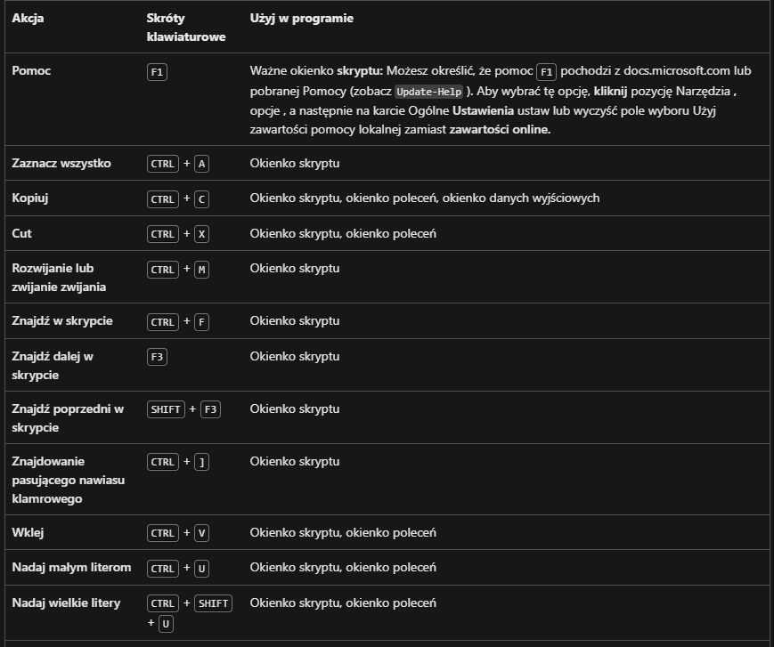
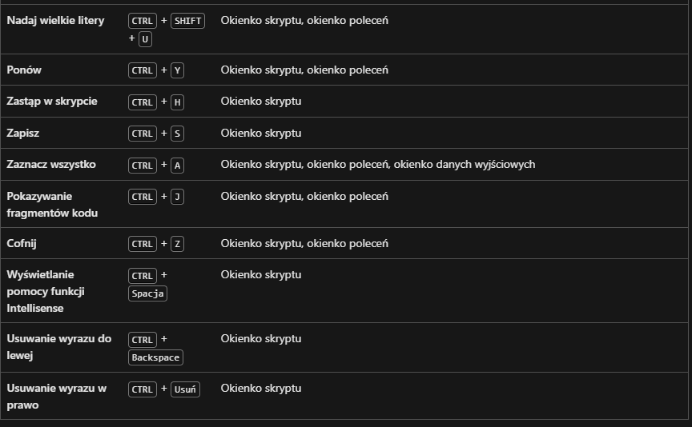

tasklist
Image Name PID Session Name Session# Mem Usage
========================= ======== ================ =========== ============
System Idle Process 0 Services 0 8 K
System 4 Services 0 144 K
Registry 148 Services 0 54 468 K
smss.exe 528 Services 0 856 K
csrss.exe 788 Services 0 4 640 K
wininit.exe 848 Services 0 5 184 K
csrss.exe 896 Console 1 5 824 K
services.exe 972 Services 0 8 832 K
lsass.exe 992 Services 0 18 460 K
winlogon.exe 600 Console 1 8 596 K
svchost.exe 1076 Services 0 19 848 K
fontdrvhost.exe 1112 Services 0 2 332 K
fontdrvhost.exe 1116 Console 1 6 712 K
WUDFHost.exe 1180 Services 0 11 720 K
svchost.exe 1248 Services 0 16 240 K
svchost.exe 1300 Services 0 9 160 K
dwm.exe 1376 Console 1 136 984 K
svchost.exe 1480 Services 0 10 128 K
svchost.exe 1516 Services 0 4 512 K
svchost.exe 1540 Services 0 6 924 K
svchost.exe 1548 Services 0 8 608 K
svchost.exe 1560 Services 0 9 860 K
svchost.exe 1768 Services 0 8 744 K
svchost.exe 1776 Services 0 9 428 K
svchost.exe 1888 Services 0 14 244 K
svchost.exe 1972 Services 0 14 396 K
IntelCpHDCPSvc.exe 2024 Services 0 5 808 K
svchost.exe 2032 Services 0 7 384 K
svchost.exe 1556 Services 0 5 348 K
svchost.exe 2076 Services 0 11 632 K
svchost.exe 2100 Services 0 7 260 K
svchost.exe 2112 Services 0 5 272 K
svchost.exe 2292 Services 0 6 596 K
IntelCpHeciSvc.exe 2344 Services 0 5 404 K
svchost.exe 2408 Services 0 10 188 K
svchost.exe 2544 Services 0 6 904 K
svchost.exe 2788 Services 0 11 032 K
NVDisplay.Container.exe 2796 Services 0 13 844 K
svchost.exe 2804 Services 0 5 480 K
svchost.exe 2836 Services 0 8 988 K
svchost.exe 2964 Services 0 10 364 K
svchost.exe 2996 Services 0 5 612 K
svchost.exe 3020 Services 0 5 988 K
WUDFHost.exe 3056 Services 0 4 580 K
svchost.exe 3112 Services 0 11 472 K
svchost.exe 3120 Services 0 5 000 K
svchost.exe 3128 Services 0 6 464 K
svchost.exe 3136 Services 0 8 648 K
svchost.exe 3176 Services 0 16 144 K
svchost.exe 3272 Services 0 7 060 K
Memory Compression 3320 Services 0 238 172 K
svchost.exe 3396 Services 0 7 776 K
dasHost.exe 3404 Services 0 14 804 K
svchost.exe 3484 Services 0 7 136 K
igfxCUIService.exe 3504 Services 0 7 152 K
svchost.exe 3584 Services 0 6 488 K
svchost.exe 3592 Services 0 11 884 K
svchost.exe 3676 Services 0 6 952 K
svchost.exe 3776 Services 0 8 428 K
NVDisplay.Container.exe 3916 Console 1 18 440 K
svchost.exe 3996 Services 0 13 124 K
svchost.exe 1356 Services 0 8 684 K
svchost.exe 3240 Services 0 5 956 K
svchost.exe 4160 Services 0 15 412 K
svchost.exe 4232 Services 0 7 104 K
svchost.exe 4252 Services 0 17 620 K
svchost.exe 4292 Services 0 12 592 K
spoolsv.exe 4340 Services 0 15 660 K
svchost.exe 4384 Services 0 20 020 K
wlanext.exe 4536 Services 0 4 564 K
conhost.exe 4552 Services 0 3 996 K
WmiPrvSE.exe 4672 Services 0 9 508 K
svchost.exe 4808 Services 0 21 920 K
svchost.exe 4816 Services 0 14 196 K
svchost.exe 4836 Services 0 36 460 K
FMService64.exe 4852 Services 0 6 172 K
armsvc.exe 4860 Services 0 4 668 K
DAX3API.exe 4872 Services 0 11 708 K
HPSIsvc.exe 4888 Services 0 4 112 K
svchost.exe 4972 Services 0 6 300 K
OneApp.IGCC.WinService.ex 4988 Services 0 10 556 K
svchost.exe 5000 Services 0 8 672 K
AGSService.exe 5028 Services 0 9 664 K
LenovoVantageService.exe 5036 Services 0 25 400 K
svchost.exe 5044 Services 0 5 552 K
svchost.exe 5060 Services 0 4 516 K
RtkAudUService64.exe 5068 Services 0 7 576 K
RstMwService.exe 5076 Services 0 5 424 K
svchost.exe 5084 Services 0 16 020 K
svchost.exe 5096 Services 0 8 432 K
HPLaserJetService.exe 5116 Services 0 4 428 K
Lenovo.Modern.ImControlle 4564 Services 0 37 080 K
MsMpEng.exe 5124 Services 0 201 964 K
AGMService.exe 5148 Services 0 8 320 K
LMS.exe 5196 Services 0 6 448 K
TeamViewer_Service.exe 5228 Services 0 12 432 K
esif_uf.exe 5256 Services 0 4 228 K
svchost.exe 5308 Services 0 8 048 K
svchost.exe 5372 Services 0 7 500 K
svchost.exe 5428 Services 0 5 988 K
jhi_service.exe 5600 Services 0 3 976 K
svchost.exe 5784 Services 0 4 676 K
svchost.exe 6240 Services 0 10 012 K
unsecapp.exe 6764 Services 0 7 956 K
svchost.exe 7540 Services 0 13 744 K
DAX3API.exe 8116 Console 1 6 824 K
conhost.exe 8124 Console 1 4 180 K
NisSrv.exe 8036 Services 0 11 292 K
dllhost.exe 8380 Services 0 9 008 K
sihost.exe 8820 Console 1 34 568 K
svchost.exe 8848 Console 1 15 272 K
PresentationFontCache.exe 8896 Services 0 12 560 K
svchost.exe 8924 Console 1 27 540 K
taskhostw.exe 9076 Console 1 17 132 K
svchost.exe 5832 Services 0 15 604 K
svchost.exe 5452 Services 0 6 512 K
explorer.exe 7812 Console 1 106 232 K
ctfmon.exe 8712 Console 1 16 868 K
svchost.exe 6980 Services 0 12 764 K
igfxEM.exe 9288 Console 1 21 732 K
svchost.exe 9476 Console 1 14 392 K
svchost.exe 9628 Console 1 27 204 K
Lenovo.Modern.ImControlle 9820 Console 1 16 068 K
Lenovo.Modern.ImControlle 9916 Console 1 10 072 K
Lenovo.Modern.ImControlle 10000 Console 1 19 336 K
Lenovo.Modern.ImControlle 10132 Services 0 18 580 K
StartMenuExperienceHost.e 6168 Console 1 26 856 K
RuntimeBroker.exe 9284 Console 1 12 020 K
SearchApp.exe 10272 Console 1 196 392 K
RuntimeBroker.exe 10552 Console 1 25 304 K
SettingSyncHost.exe 10980 Console 1 5 024 K
Lenovo.Modern.ImControlle 11000 Services 0 20 388 K
rundll32.exe 11260 Console 1 4 464 K
GoogleCrashHandler.exe 6476 Services 0 152 K
GoogleCrashHandler64.exe 9460 Services 0 120 K
svchost.exe 11520 Services 0 14 704 K
YourPhone.exe 11648 Console 1 20 100 K
LenovoVantage-(VantageCor 11736 Services 0 10 196 K
RuntimeBroker.exe 10956 Console 1 10 056 K
TextInputHost.exe 12448 Console 1 11 540 K
svchost.exe 12512 Services 0 7 212 K
svchost.exe 12520 Services 0 6 128 K
svchost.exe 12612 Services 0 7 836 K
RuntimeBroker.exe 12832 Console 1 24 204 K
SecurityHealthSystray.exe 13060 Console 1 7 672 K
SecurityHealthService.exe 13096 Services 0 13 712 K
RtkAudUService64.exe 13180 Console 1 8 176 K
figma_agent.exe 10316 Console 1 11 072 K
AdobeCollabSync.exe 1900 Console 1 8 256 K
AdobeCollabSync.exe 2388 Console 1 12 972 K
GoogleCrashHandler.exe 3048 Console 1 156 K
GoogleCrashHandler64.exe 2200 Console 1 128 K
svchost.exe 3496 Services 0 8 112 K
utility.exe 3388 Console 1 20 056 K
svchost.exe 4240 Services 0 10 156 K
Cortana.exe 12648 Console 1 3 616 K
RuntimeBroker.exe 9968 Console 1 13 140 K
acrotray.exe 10328 Console 1 11 592 K
svchost.exe 1400 Console 1 14 280 K
svchost.exe 13472 Services 0 5 200 K
ApplicationFrameHost.exe 13924 Console 1 20 968 K
Calculator.exe 13908 Console 1 1 108 K
RuntimeBroker.exe 13784 Console 1 5 456 K
SystemSettings.exe 8504 Console 1 1 076 K
RuntimeBroker.exe 14076 Console 1 15 548 K
svchost.exe 12092 Services 0 10 868 K
UserOOBEBroker.exe 1592 Console 1 7 344 K
svchost.exe 12508 Services 0 11 008 K
Video.UI.exe 4024 Console 1 1 120 K
RuntimeBroker.exe 12864 Console 1 6 536 K
HxOutlook.exe 2176 Console 1 1 112 K
HxTsr.exe 8880 Console 1 25 544 K
svchost.exe 11916 Services 0 16 960 K
svchost.exe 5688 Services 0 10 964 K
SgrmBroker.exe 13532 Services 0 7 280 K
svchost.exe 11256 Services 0 5 812 K
svchost.exe 13952 Services 0 8 972 K
AcrobatNotificationClient 13012 Console 1 1 928 K
dllhost.exe 3500 Console 1 10 292 K
svchost.exe 9336 Console 1 9 676 K
ShellExperienceHost.exe 924 Console 1 43 984 K
svchost.exe 12108 Console 1 6 112 K
ConEmu64.exe 13000 Console 1 30 484 K
ConEmuC64.exe 11728 Console 1 5 268 K
conhost.exe 5532 Console 1 6 780 K
cmd.exe 12184 Console 1 6 296 K
MusNotifyIcon.exe 1472 Console 1 260 K
RuntimeBroker.exe 13192 Console 1 26 932 K
node.exe 13696 Console 1 4 184 K
cmd.exe 13288 Console 1 4 156 K
node.exe 14232 Console 1 100 284 K
chrome.exe 2316 Console 1 232 004 K
chrome.exe 5780 Console 1 6 516 K
chrome.exe 1796 Console 1 312 680 K
chrome.exe 8616 Console 1 42 220 K
chrome.exe 7508 Console 1 16 768 K
chrome.exe 4040 Console 1 58 728 K
chrome.exe 4180 Console 1 14 176 K
chrome.exe 4080 Console 1 47 404 K
chrome.exe 7848 Console 1 99 908 K
chrome.exe 6140 Console 1 11 128 K
Lenovo.Modern.ImControlle 14348 Console 1 12 496 K
VirtualBox.exe 14920 Console 1 16 448 K
VBoxSVC.exe 14976 Console 1 19 068 K
VBoxSDS.exe 15012 Services 0 8 164 K
Discord.exe 15132 Console 1 59 684 K
Discord.exe 14656 Console 1 3 292 K
Discord.exe 4592 Console 1 35 516 K
Discord.exe 2196 Console 1 18 444 K
Discord.exe 12456 Console 1 97 788 K
Discord.exe 15452 Console 1 11 380 K
LenovoVantage-(LenovoSecu 12768 Console 1 6 068 K
LenovoVantage-(DeviceSett 15952 Console 1 9 872 K
LenovoVantage-(LenovoServ 15316 Console 1 15 628 K
LenovoVantage-(SmartInter 7624 Console 1 9 780 K
chrome.exe 14992 Console 1 85 840 K
chrome.exe 14304 Console 1 72 476 K
OfficeClickToRun.exe 5844 Services 0 23 292 K
AppVShNotify.exe 2912 Services 0 6 716 K
AppVShNotify.exe 14020 Console 1 7 296 K
ONENOTEM.EXE 15616 Console 1 2 336 K
SearchIndexer.exe 15544 Services 0 25 992 K
ConEmuC64.exe 14932 Console 1 6 176 K
conhost.exe 8580 Console 1 7 488 K
cmd.exe 7204 Console 1 7 264 K
Code.exe 6888 Console 1 79 556 K
Code.exe 10728 Console 1 7 036 K
Code.exe 13376 Console 1 118 524 K
Code.exe 1596 Console 1 16 760 K
Code.exe 14780 Console 1 196 472 K
Code.exe 2356 Console 1 127 648 K
Code.exe 7640 Console 1 48 352 K
Code.exe 5528 Console 1 14 540 K
Code.exe 10104 Console 1 21 836 K
Code.exe 10800 Console 1 57 460 K
Code.exe 3336 Console 1 14 856 K
Code.exe 4528 Console 1 12 908 K
Code.exe 11368 Console 1 20 552 K
Code.exe 15556 Console 1 22 304 K
conhost.exe 8760 Console 1 5 668 K
vsls-agent.exe 6928 Console 1 11 584 K
svchost.exe 15024 Services 0 13 480 K
VirtualBoxVM.exe 7432 Console 1 6 820 K
VirtualBoxVM.exe 17392 Console 1 4 772 K
VirtualBoxVM.exe 17288 Console 1 122 636 K
svchost.exe 6900 Services 0 6 712 K
MpCopyAccelerator.exe 8012 Services 0 6 296 K
AdobeIPCBroker.exe 11304 Console 1 10 340 K
Adobe Desktop Service.exe 8264 Console 1 25 296 K
AdobeUpdateService.exe 17076 Services 0 9 976 K
Creative Cloud Helper.exe 6356 Console 1 9 980 K
Creative Cloud Helper.exe 15636 Console 1 15 992 K
CCLibrary.exe 1096 Console 1 3 096 K
node.exe 15528 Console 1 20 512 K
conhost.exe 10528 Console 1 5 984 K
Adobe Installer.exe 16404 Console 1 10 644 K
AdobeNotificationClient.e 13420 Console 1 2 968 K
AdobeExtensionsService.ex 16308 Console 1 7 256 K
RuntimeBroker.exe 5860 Console 1 7 440 K
CoreSync.exe 16356 Console 1 29 040 K
CCXProcess.exe 8352 Console 1 3 000 K
node.exe 10680 Console 1 42 420 K
conhost.exe 11536 Console 1 5 744 K
LenovoVantage-(SmartPriva 5552 Console 1 22 040 K
conhost.exe 17328 Console 1 7 368 K
ConEmuC64.exe 2664 Console 1 7 328 K
conhost.exe 13636 Console 1 9 332 K
cmd.exe 16280 Console 1 9 932 K
chrome.exe 5608 Console 1 86 276 K
svchost.exe 6784 Console 1 13 056 K
svchost.exe 12296 Services 0 9 584 K
svchost.exe 15664 Console 1 9 084 K
SystemSettingsBroker.exe 16784 Console 1 29 560 K
svchost.exe 17732 Services 0 7 660 K
chrome.exe 17616 Console 1 38 372 K
chrome.exe 12044 Console 1 122 844 K
chrome.exe 13968 Console 1 111 596 K
Code.exe 5572 Console 1 80 508 K
chrome.exe 17060 Console 1 17 744 K
chrome.exe 17340 Console 1 100 168 K
chrome.exe 18860 Console 1 110 180 K
svchost.exe 7916 Services 0 8 064 K
WUDFHost.exe 14720 Services 0 9 340 K
chrome.exe 1192 Console 1 89 708 K
chrome.exe 1196 Console 1 126 956 K
chrome.exe 10236 Console 1 35 908 K
TrustedInstaller.exe 19072 Services 0 8 296 K
TiWorker.exe 18520 Services 0 11 692 K
chrome.exe 2372 Console 1 107 188 K
chrome.exe 4756 Console 1 67 040 K
chrome.exe 15396 Console 1 96 220 K
chrome.exe 8960 Console 1 57 064 K
chrome.exe 16340 Console 1 84 448 K
chrome.exe 14692 Console 1 72 396 K
chrome.exe 17404 Console 1 52 516 K
svchost.exe 18048 Services 0 6 824 K
chrome.exe 16124 Console 1 55 472 K
chrome.exe 11408 Console 1 55 076 K
chrome.exe 3928 Console 1 52 736 K
chrome.exe 16708 Console 1 52 212 K
chrome.exe 16968 Console 1 50 376 K
chrome.exe 19076 Console 1 58 964 K
chrome.exe 16284 Console 1 51 944 K
chrome.exe 13588 Console 1 57 712 K
chrome.exe 13604 Console 1 53 884 K
chrome.exe 3672 Console 1 53 484 K
chrome.exe 17640 Console 1 49 472 K
chrome.exe 19520 Console 1 33 420 K
chrome.exe 16800 Console 1 37 160 K
tasklist.exe 10116 Console 1 11 132 K
WmiPrvSE.exe 17996 Services 0 10 336 K
dsrm succeeded:ou=IT,dc=egzamin,dc=local
tasklist | findstr /r /c:"exp"
explorer.exe 7812 Console 1 105 088 K
icacls "D:\test" /grant test:(OI)(CI)F /T
processed file: D:\test
Successfully processed 1 files; Failed processing 0 files
net config server
Nazwa serwera \\WIN-776879JKCLC
Komentarz serwera
Wersja oprogramowania Windows Server 2019 Standard
Serwer jest aktywny na
NetbiosSmb (WIN-776879JKCLC)
NetBT_Tcpip_{5BA4CD8C-D63B-49B3-A908-C7337A9A39AE} (WIN-776879JKCLC)
NetBT_Tcpip_{C0D8F674-A8DB-4D0A-B5E2-FDAB51C63A42} (WIN-776879JKCLC)
Serwer jest ukryty Nie
Maksymalna liczba zalogowanych użytkowników 16777216
Maksymalna liczba otwartych plików na sesję 16384
Czas bezczynności sesji (min) 15
Polecenie zostało wykonane pomyślnie.
@echo off
SET /A a = 5
SET /A b = 10
SET /A c = %a% + %b%
set message=Hello World
SET /P answer = "prompt: "
@echo off
title Test
set /p language=Select a language(de/en)
IF /i "%language%"=="de" goto languageDE
IF /i "%language%"=="en" goto languageEN
echo Not found.
goto commonexit
:languageDE
echo German
goto commonexit
:languageEN
echo English
goto commonexit
:commonexit
pause
@echo off
for /l %%x in (1, 1, 100) do (
echo %%x
)
Get-Help -Name Get-Help
NAME
Get-Help
SYNTAX
Get-Help [[-Name] ] [-Path ] [-Category {Alias | Cmdlet | Provider | General | FAQ | Glos
sary | HelpFile | ScriptCommand | Function | Filter | ExternalScript | All | DefaultHelp | Workflow | Dsc
Resource | Class | Configuration}] [-Component ] [-Functionality ] [-Role ]
[-Full] []
Get-Help [[-Name] ] -Detailed [-Path ] [-Category {Alias | Cmdlet | Provider | General |
FAQ | Glossary | HelpFile | ScriptCommand | Function | Filter | ExternalScript | All | DefaultHelp | Work
flow | DscResource | Class | Configuration}] [-Component ] [-Functionality ] [-Role <
string[]>] []
Get-Help [[-Name] ] -Examples [-Path ] [-Category {Alias | Cmdlet | Provider | General |
FAQ | Glossary | HelpFile | ScriptCommand | Function | Filter | ExternalScript | All | DefaultHelp | Work
flow | DscResource | Class | Configuration}] [-Component ] [-Functionality ] [-Role <
string[]>] []
Get-Help [[-Name] ] -Parameter [-Path ] [-Category {Alias | Cmdlet | Provider |
General | FAQ | Glossary | HelpFile | ScriptCommand | Function | Filter | ExternalScript | All | DefaultH
elp | Workflow | DscResource | Class | Configuration}] [-Component ] [-Functionality
] [-Role ] []
Get-Help [[-Name] ] -Online [-Path ] [-Category {Alias | Cmdlet | Provider | General | FA
Q | Glossary | HelpFile | ScriptCommand | Function | Filter | ExternalScript | All | DefaultHelp | Workfl
ow | DscResource | Class | Configuration}] [-Component ] [-Functionality ] [-Role ] []
Get-Help [[-Name] ] -ShowWindow [-Path ] [-Category {Alias | Cmdlet | Provider | General
| FAQ | Glossary | HelpFile | ScriptCommand | Function | Filter | ExternalScript | All | DefaultHelp | Wo
rkflow | DscResource | Class | Configuration}] [-Component ] [-Functionality ] [-Role
] []
ALIASES
None
REMARKS
Get-Help cannot find the Help files for this cmdlet on this computer. It is displaying only partial help.
-- To download and install Help files for the module that includes this cmdlet, use Update-Help.
-- To view the Help topic for this cmdlet online, type: "Get-Help Get-Help -Online" or
go to https://go.microsoft.com/fwlink/?LinkID=113316.
Get-Command -Name *process*
CommandType Name Version Source
----------- ---- ------- ------
Function Get-AppvVirtualProcess 1.0.0.0 AppvClient
Function Start-AppvVirtualProcess 1.0.0.0 AppvClient
Cmdlet ConvertTo-ProcessMitigationPolicy 1.0.11 ProcessMitigations
Cmdlet Debug-Process 3.1.0.0 Microsoft.PowerShell.Management
Cmdlet Enter-PSHostProcess 3.0.0.0 Microsoft.PowerShell.Core
Cmdlet Exit-PSHostProcess 3.0.0.0 Microsoft.PowerShell.Core
Cmdlet Get-Process 3.1.0.0 Microsoft.PowerShell.Management
Cmdlet Get-ProcessMitigation 1.0.11 ProcessMitigations
Cmdlet Get-PSHostProcessInfo 3.0.0.0 Microsoft.PowerShell.Core
Cmdlet Set-ProcessMitigation 1.0.11 ProcessMitigations
Cmdlet Start-Process 3.1.0.0 Microsoft.PowerShell.Management
Cmdlet Stop-Process 3.1.0.0 Microsoft.PowerShell.Management
Cmdlet Wait-Process 3.1.0.0 Microsoft.PowerShell.Management
Application qprocess.exe 10.0.17... C:\Windows\system32\qprocess...
Get-Command | Where CommandType -Eq Cmdlet
CommandType Name Version Source
----------- ---- ------- ------
Cmdlet Add-ADCentralAccessPolicyMember 1.0.1.0 ActiveDirectory
Cmdlet Add-ADComputerServiceAccount 1.0.1.0 ActiveDirectory
Cmdlet Add-ADDomainControllerPasswordReplicationPolicy 1.0.1.0 ActiveDirectory
Cmdlet Add-ADDSReadOnlyDomainControllerAccount 1.0.0.0 ADDSDeployment
Cmdlet Add-ADFineGrainedPasswordPolicySubject 1.0.1.0 ActiveDirectory
Cmdlet Add-ADGroupMember 1.0.1.0 ActiveDirectory
Cmdlet Add-ADPrincipalGroupMembership 1.0.1.0 ActiveDirectory
Cmdlet Add-ADResourcePropertyListMember 1.0.1.0 ActiveDirectory
Cmdlet Add-AppvClientConnectionGroup 1.0.0.0 AppvClient
Cmdlet Add-AppvClientPackage 1.0.0.0 AppvClient
Cmdlet Add-AppvPublishingServer 1.0.0.0 AppvClient
Cmdlet Add-AppxPackage 2.0.1.0 Appx
Cmdlet Add-AppxProvisionedPackage 3.0 Dism
Cmdlet Add-AppxVolume 2.0.1.0 Appx
Cmdlet Add-BitsFile 2.0.0.0 BitsTransfer
Cmdlet Add-CertificateEnrollmentPolicyServer 1.0.0.0 PKI
Cmdlet Add-ClusteriSCSITargetServerRole 2.0.0.0 IscsiTarget
Cmdlet Add-Computer 3.1.0.0 Microsoft.PowerShell.Management
Cmdlet Add-Content 3.1.0.0 Microsoft.PowerShell.Management
Cmdlet Add-History 3.0.0.0 Microsoft.PowerShell.Core
Cmdlet Add-IscsiVirtualDiskTargetMapping 2.0.0.0 IscsiTarget
Cmdlet Add-JobTrigger 1.1.0.0 PSScheduledJob
Cmdlet Add-KdsRootKey 1.0.0.0 Kds
Cmdlet Add-LocalGroupMember 1.0.0.0 Microsoft.PowerShell.LocalAc...
Cmdlet Add-Member 3.1.0.0 Microsoft.PowerShell.Utility
Cmdlet Add-PSSnapin 3.0.0.0 Microsoft.PowerShell.Core
Cmdlet Add-SignerRule 1.0 ConfigCI
Cmdlet Add-Type 3.1.0.0 Microsoft.PowerShell.Utility
Cmdlet Add-WebConfiguration 1.0.0.0 WebAdministration
Cmdlet Add-WebConfigurationLock 1.0.0.0 WebAdministration
Cmdlet Add-WebConfigurationProperty 1.0.0.0 WebAdministration
Cmdlet Add-WindowsCapability 3.0 Dism
Cmdlet Add-WindowsDriver 3.0 Dism
Cmdlet Add-WindowsImage 3.0 Dism
Cmdlet Add-WindowsPackage 3.0 Dism
Cmdlet Backup-AuditPolicy 1.0.0.0 SecurityCmdlets
Cmdlet Backup-GPO 1.0.0.0 GroupPolicy
Cmdlet Backup-SecurityPolicy 1.0.0.0 SecurityCmdlets
Cmdlet Backup-WebConfiguration 1.0.0.0 WebAdministration
Cmdlet Block-GPInheritance 1.0.0.0 GroupPolicy
Cmdlet Checkpoint-Computer 3.1.0.0 Microsoft.PowerShell.Management
Cmdlet Checkpoint-IscsiVirtualDisk 2.0.0.0 IscsiTarget
Cmdlet Clear-ADAccountExpiration 1.0.1.0 ActiveDirectory
Cmdlet Clear-ADClaimTransformLink 1.0.1.0 ActiveDirectory
Cmdlet Clear-Content 3.1.0.0 Microsoft.PowerShell.Management
Cmdlet Clear-EventLog 3.1.0.0 Microsoft.PowerShell.Management
Cmdlet Clear-History 3.0.0.0 Microsoft.PowerShell.Core
Cmdlet Clear-IISCentralCertProvider 1.1.0.0 IISAdministration
Cmdlet Clear-IISConfigCollection 1.1.0.0 IISAdministration
Cmdlet Clear-Item 3.1.0.0 Microsoft.PowerShell.Management
Cmdlet Clear-ItemProperty 3.1.0.0 Microsoft.PowerShell.Management
Cmdlet Clear-KdsCache 1.0.0.0 Kds
Cmdlet Clear-RecycleBin 3.1.0.0 Microsoft.PowerShell.Management
Cmdlet Clear-Tpm 2.0.0.0 TrustedPlatformModule
Cmdlet Clear-UevAppxPackage 2.1.639.0 UEV
Cmdlet Clear-UevConfiguration 2.1.639.0 UEV
Cmdlet Clear-Variable 3.1.0.0 Microsoft.PowerShell.Utility
Cmdlet Clear-WebCentralCertProvider 1.0.0.0 WebAdministration
Cmdlet Clear-WebConfiguration 1.0.0.0 WebAdministration
Cmdlet Clear-WebRequestTracingSetting 1.0.0.0 WebAdministration
Cmdlet Clear-WebRequestTracingSettings 1.0.0.0 WebAdministration
Cmdlet Clear-WindowsCorruptMountPoint 3.0 Dism
Cmdlet Compare-Object 3.1.0.0 Microsoft.PowerShell.Utility
Cmdlet Complete-BitsTransfer 2.0.0.0 BitsTransfer
Cmdlet Complete-DtcDiagnosticTransaction 1.0.0.0 MsDtc
Cmdlet Complete-Transaction 3.1.0.0 Microsoft.PowerShell.Management
Cmdlet Confirm-SecureBootUEFI 2.0.0.0 SecureBoot
Cmdlet Connect-PSSession 3.0.0.0 Microsoft.PowerShell.Core
Cmdlet Connect-WSMan 3.0.0.0 Microsoft.WSMan.Management
Cmdlet ConvertFrom-CIPolicy 1.0 ConfigCI
Cmdlet ConvertFrom-Csv 3.1.0.0 Microsoft.PowerShell.Utility
Cmdlet ConvertFrom-Json 3.1.0.0 Microsoft.PowerShell.Utility
Cmdlet ConvertFrom-SecureString 3.0.0.0 Microsoft.PowerShell.Security
Cmdlet ConvertFrom-String 3.1.0.0 Microsoft.PowerShell.Utility
Cmdlet ConvertFrom-StringData 3.1.0.0 Microsoft.PowerShell.Utility
Cmdlet Convert-IscsiVirtualDisk 2.0.0.0 IscsiTarget
Cmdlet Convert-Path 3.1.0.0 Microsoft.PowerShell.Management
Cmdlet Convert-String 3.1.0.0 Microsoft.PowerShell.Utility
Cmdlet ConvertTo-Csv 3.1.0.0 Microsoft.PowerShell.Utility
Cmdlet ConvertTo-Html 3.1.0.0 Microsoft.PowerShell.Utility
Cmdlet ConvertTo-Json 3.1.0.0 Microsoft.PowerShell.Utility
Cmdlet ConvertTo-ProcessMitigationPolicy 1.0.11 ProcessMitigations
Cmdlet ConvertTo-SecureString 3.0.0.0 Microsoft.PowerShell.Security
Cmdlet ConvertTo-TpmOwnerAuth 2.0.0.0 TrustedPlatformModule
Cmdlet ConvertTo-WebApplication 1.0.0.0 WebAdministration
Cmdlet ConvertTo-Xml 3.1.0.0 Microsoft.PowerShell.Utility
Cmdlet Copy-GPO 1.0.0.0 GroupPolicy
Cmdlet Copy-Item 3.1.0.0 Microsoft.PowerShell.Management
Cmdlet Copy-ItemProperty 3.1.0.0 Microsoft.PowerShell.Management
Cmdlet Debug-Job 3.0.0.0 Microsoft.PowerShell.Core
Cmdlet Debug-Process 3.1.0.0 Microsoft.PowerShell.Management
Cmdlet Debug-Runspace 3.1.0.0 Microsoft.PowerShell.Utility
Cmdlet Disable-ADAccount 1.0.1.0 ActiveDirectory
Cmdlet Disable-ADOptionalFeature 1.0.1.0 ActiveDirectory
Cmdlet Disable-AppBackgroundTaskDiagnosticLog 1.0.0.0 AppBackgroundTask
Cmdlet Disable-Appv 1.0.0.0 AppvClient
Cmdlet Disable-AppvClientConnectionGroup 1.0.0.0 AppvClient
Cmdlet Disable-ComputerRestore 3.1.0.0 Microsoft.PowerShell.Management
Cmdlet Disable-IISCentralCertProvider 1.1.0.0 IISAdministration
Cmdlet Disable-IISSharedConfig 1.1.0.0 IISAdministration
Cmdlet Disable-JobTrigger 1.1.0.0 PSScheduledJob
Cmdlet Disable-LocalUser 1.0.0.0 Microsoft.PowerShell.LocalAc...
Cmdlet Disable-PSBreakpoint 3.1.0.0 Microsoft.PowerShell.Utility
Cmdlet Disable-PSRemoting 3.0.0.0 Microsoft.PowerShell.Core
Cmdlet Disable-PSSessionConfiguration 3.0.0.0 Microsoft.PowerShell.Core
Cmdlet Disable-RunspaceDebug 3.1.0.0 Microsoft.PowerShell.Utility
Cmdlet Disable-ScheduledJob 1.1.0.0 PSScheduledJob
Cmdlet Disable-TlsCipherSuite 2.0.0.0 TLS
Cmdlet Disable-TlsEccCurve 2.0.0.0 TLS
Cmdlet Disable-TlsSessionTicketKey 2.0.0.0 TLS
Cmdlet Disable-TpmAutoProvisioning 2.0.0.0 TrustedPlatformModule
Cmdlet Disable-Uev 2.1.639.0 UEV
Cmdlet Disable-UevAppxPackage 2.1.639.0 UEV
Cmdlet Disable-UevTemplate 2.1.639.0 UEV
Cmdlet Disable-WebCentralCertProvider 1.0.0.0 WebAdministration
Cmdlet Disable-WebGlobalModule 1.0.0.0 WebAdministration
Cmdlet Disable-WebRequestTracing 1.0.0.0 WebAdministration
Cmdlet Disable-WindowsErrorReporting 1.0 WindowsErrorReporting
Cmdlet Disable-WindowsOptionalFeature 3.0 Dism
Cmdlet Disable-WSManCredSSP 3.0.0.0 Microsoft.WSMan.Management
Cmdlet Disconnect-PSSession 3.0.0.0 Microsoft.PowerShell.Core
Cmdlet Disconnect-WSMan 3.0.0.0 Microsoft.WSMan.Management
Cmdlet Dismount-AppxVolume 2.0.1.0 Appx
Cmdlet Dismount-IscsiVirtualDiskSnapshot 2.0.0.0 IscsiTarget
Cmdlet Dismount-WindowsImage 3.0 Dism
Cmdlet Edit-CIPolicyRule 1.0 ConfigCI
Cmdlet Enable-ADAccount 1.0.1.0 ActiveDirectory
Cmdlet Enable-ADOptionalFeature 1.0.1.0 ActiveDirectory
Cmdlet Enable-AppBackgroundTaskDiagnosticLog 1.0.0.0 AppBackgroundTask
Cmdlet Enable-Appv 1.0.0.0 AppvClient
Cmdlet Enable-AppvClientConnectionGroup 1.0.0.0 AppvClient
Cmdlet Enable-ComputerRestore 3.1.0.0 Microsoft.PowerShell.Management
Cmdlet Enable-IISCentralCertProvider 1.1.0.0 IISAdministration
Cmdlet Enable-IISSharedConfig 1.1.0.0 IISAdministration
Cmdlet Enable-JobTrigger 1.1.0.0 PSScheduledJob
Cmdlet Enable-LocalUser 1.0.0.0 Microsoft.PowerShell.LocalAc...
Cmdlet Enable-PSBreakpoint 3.1.0.0 Microsoft.PowerShell.Utility
Cmdlet Enable-PSRemoting 3.0.0.0 Microsoft.PowerShell.Core
Cmdlet Enable-PSSessionConfiguration 3.0.0.0 Microsoft.PowerShell.Core
Cmdlet Enable-RunspaceDebug 3.1.0.0 Microsoft.PowerShell.Utility
Cmdlet Enable-ScheduledJob 1.1.0.0 PSScheduledJob
Cmdlet Enable-TlsCipherSuite 2.0.0.0 TLS
Cmdlet Enable-TlsEccCurve 2.0.0.0 TLS
Cmdlet Enable-TlsSessionTicketKey 2.0.0.0 TLS
Cmdlet Enable-TpmAutoProvisioning 2.0.0.0 TrustedPlatformModule
Cmdlet Enable-Uev 2.1.639.0 UEV
Cmdlet Enable-UevAppxPackage 2.1.639.0 UEV
Cmdlet Enable-UevTemplate 2.1.639.0 UEV
Cmdlet Enable-WebCentralCertProvider 1.0.0.0 WebAdministration
Cmdlet Enable-WebGlobalModule 1.0.0.0 WebAdministration
Cmdlet Enable-WebRequestTracing 1.0.0.0 WebAdministration
Cmdlet Enable-WindowsErrorReporting 1.0 WindowsErrorReporting
Cmdlet Enable-WindowsOptionalFeature 3.0 Dism
Cmdlet Enable-WSManCredSSP 3.0.0.0 Microsoft.WSMan.Management
Cmdlet Enter-PSHostProcess 3.0.0.0 Microsoft.PowerShell.Core
Cmdlet Enter-PSSession 3.0.0.0 Microsoft.PowerShell.Core
Cmdlet Exit-PSHostProcess 3.0.0.0 Microsoft.PowerShell.Core
Cmdlet Exit-PSSession 3.0.0.0 Microsoft.PowerShell.Core
Cmdlet Expand-WindowsCustomDataImage 3.0 Dism
Cmdlet Expand-WindowsImage 3.0 Dism
Cmdlet Export-Alias 3.1.0.0 Microsoft.PowerShell.Utility
Cmdlet Export-BinaryMiLog 1.0.0.0 CimCmdlets
Cmdlet Export-Certificate 1.0.0.0 PKI
Cmdlet Export-Clixml 3.1.0.0 Microsoft.PowerShell.Utility
Cmdlet Export-Console 3.0.0.0 Microsoft.PowerShell.Core
Cmdlet Export-Counter 3.0.0.0 Microsoft.PowerShell.Diagnos...
Cmdlet Export-Csv 3.1.0.0 Microsoft.PowerShell.Utility
Cmdlet Export-FormatData 3.1.0.0 Microsoft.PowerShell.Utility
Cmdlet Export-IISConfiguration 1.1.0.0 IISAdministration
Cmdlet Export-IscsiVirtualDiskSnapshot 2.0.0.0 IscsiTarget
Cmdlet Export-ModuleMember 3.0.0.0 Microsoft.PowerShell.Core
Cmdlet Export-PfxCertificate 1.0.0.0 PKI
Cmdlet Export-PSSession 3.1.0.0 Microsoft.PowerShell.Utility
Cmdlet Export-StartLayout 1.0.0.0 StartLayout
Cmdlet Export-StartLayoutEdgeAssets 1.0.0.0 StartLayout
Cmdlet Export-TlsSessionTicketKey 2.0.0.0 TLS
Cmdlet Export-UevConfiguration 2.1.639.0 UEV
Cmdlet Export-UevPackage 2.1.639.0 UEV
Cmdlet Export-WindowsCapabilitySource 3.0 Dism
Cmdlet Export-WindowsDriver 3.0 Dism
Cmdlet Export-WindowsImage 3.0 Dism
Cmdlet Find-Package 1.0.0.1 PackageManagement
Cmdlet Find-PackageProvider 1.0.0.1 PackageManagement
Cmdlet ForEach-Object 3.0.0.0 Microsoft.PowerShell.Core
Cmdlet Format-Custom 3.1.0.0 Microsoft.PowerShell.Utility
Cmdlet Format-List 3.1.0.0 Microsoft.PowerShell.Utility
Cmdlet Format-SecureBootUEFI 2.0.0.0 SecureBoot
Cmdlet Format-Table 3.1.0.0 Microsoft.PowerShell.Utility
Cmdlet Format-Wide 3.1.0.0 Microsoft.PowerShell.Utility
Cmdlet Get-Acl 3.0.0.0 Microsoft.PowerShell.Security
Cmdlet Get-ADAccountAuthorizationGroup 1.0.1.0 ActiveDirectory
Cmdlet Get-ADAccountResultantPasswordReplicationPolicy 1.0.1.0 ActiveDirectory
Cmdlet Get-ADAuthenticationPolicy 1.0.1.0 ActiveDirectory
Cmdlet Get-ADAuthenticationPolicySilo 1.0.1.0 ActiveDirectory
Cmdlet Get-ADCentralAccessPolicy 1.0.1.0 ActiveDirectory
Cmdlet Get-ADCentralAccessRule 1.0.1.0 ActiveDirectory
Cmdlet Get-ADClaimTransformPolicy 1.0.1.0 ActiveDirectory
Cmdlet Get-ADClaimType 1.0.1.0 ActiveDirectory
Cmdlet Get-ADComputer 1.0.1.0 ActiveDirectory
Cmdlet Get-ADComputerServiceAccount 1.0.1.0 ActiveDirectory
Cmdlet Get-ADDCCloningExcludedApplicationList 1.0.1.0 ActiveDirectory
Cmdlet Get-ADDefaultDomainPasswordPolicy 1.0.1.0 ActiveDirectory
Cmdlet Get-ADDomain 1.0.1.0 ActiveDirectory
Cmdlet Get-ADDomainController 1.0.1.0 ActiveDirectory
Cmdlet Get-ADDomainControllerPasswordReplicationPolicy 1.0.1.0 ActiveDirectory
Cmdlet Get-ADDomainControllerPasswordReplicationPolicy... 1.0.1.0 ActiveDirectory
Cmdlet Get-ADFineGrainedPasswordPolicy 1.0.1.0 ActiveDirectory
Cmdlet Get-ADFineGrainedPasswordPolicySubject 1.0.1.0 ActiveDirectory
Cmdlet Get-ADForest 1.0.1.0 ActiveDirectory
Cmdlet Get-ADGroup 1.0.1.0 ActiveDirectory
Cmdlet Get-ADGroupMember 1.0.1.0 ActiveDirectory
Cmdlet Get-ADObject 1.0.1.0 ActiveDirectory
Cmdlet Get-ADOptionalFeature 1.0.1.0 ActiveDirectory
Cmdlet Get-ADOrganizationalUnit 1.0.1.0 ActiveDirectory
Cmdlet Get-ADPrincipalGroupMembership 1.0.1.0 ActiveDirectory
Cmdlet Get-ADReplicationAttributeMetadata 1.0.1.0 ActiveDirectory
Cmdlet Get-ADReplicationConnection 1.0.1.0 ActiveDirectory
Cmdlet Get-ADReplicationFailure 1.0.1.0 ActiveDirectory
Cmdlet Get-ADReplicationPartnerMetadata 1.0.1.0 ActiveDirectory
Cmdlet Get-ADReplicationQueueOperation 1.0.1.0 ActiveDirectory
Cmdlet Get-ADReplicationSite 1.0.1.0 ActiveDirectory
Cmdlet Get-ADReplicationSiteLink 1.0.1.0 ActiveDirectory
Cmdlet Get-ADReplicationSiteLinkBridge 1.0.1.0 ActiveDirectory
Cmdlet Get-ADReplicationSubnet 1.0.1.0 ActiveDirectory
Cmdlet Get-ADReplicationUpToDatenessVectorTable 1.0.1.0 ActiveDirectory
Cmdlet Get-ADResourceProperty 1.0.1.0 ActiveDirectory
Cmdlet Get-ADResourcePropertyList 1.0.1.0 ActiveDirectory
Cmdlet Get-ADResourcePropertyValueType 1.0.1.0 ActiveDirectory
Cmdlet Get-ADRootDSE 1.0.1.0 ActiveDirectory
Cmdlet Get-ADServiceAccount 1.0.1.0 ActiveDirectory
Cmdlet Get-ADTrust 1.0.1.0 ActiveDirectory
Cmdlet Get-ADUser 1.0.1.0 ActiveDirectory
Cmdlet Get-ADUserResultantPasswordPolicy 1.0.1.0 ActiveDirectory
Cmdlet Get-Alias 3.1.0.0 Microsoft.PowerShell.Utility
Cmdlet Get-AppLockerFileInformation 2.0.0.0 AppLocker
Cmdlet Get-AppLockerPolicy 2.0.0.0 AppLocker
Cmdlet Get-AppvClientApplication 1.0.0.0 AppvClient
Cmdlet Get-AppvClientConfiguration 1.0.0.0 AppvClient
Cmdlet Get-AppvClientConnectionGroup 1.0.0.0 AppvClient
Cmdlet Get-AppvClientMode 1.0.0.0 AppvClient
Cmdlet Get-AppvClientPackage 1.0.0.0 AppvClient
Cmdlet Get-AppvPublishingServer 1.0.0.0 AppvClient
Cmdlet Get-AppvStatus 1.0.0.0 AppvClient
Cmdlet Get-AppxDefaultVolume 2.0.1.0 Appx
Cmdlet Get-AppxPackage 2.0.1.0 Appx
Cmdlet Get-AppxPackageManifest 2.0.1.0 Appx
Cmdlet Get-AppxProvisionedPackage 3.0 Dism
Cmdlet Get-AppxVolume 2.0.1.0 Appx
Cmdlet Get-AuthenticodeSignature 3.0.0.0 Microsoft.PowerShell.Security
Cmdlet Get-BitsTransfer 2.0.0.0 BitsTransfer
Cmdlet Get-BpaModel 1.0 BestPractices
Cmdlet Get-BpaResult 1.0 BestPractices
Cmdlet Get-Certificate 1.0.0.0 PKI
Cmdlet Get-CertificateAutoEnrollmentPolicy 1.0.0.0 PKI
Cmdlet Get-CertificateEnrollmentPolicyServer 1.0.0.0 PKI
Cmdlet Get-CertificateNotificationTask 1.0.0.0 PKI
Cmdlet Get-ChildItem 3.1.0.0 Microsoft.PowerShell.Management
Cmdlet Get-CimAssociatedInstance 1.0.0.0 CimCmdlets
Cmdlet Get-CimClass 1.0.0.0 CimCmdlets
Cmdlet Get-CimInstance 1.0.0.0 CimCmdlets
Cmdlet Get-CimSession 1.0.0.0 CimCmdlets
Cmdlet Get-CIPolicy 1.0 ConfigCI
Cmdlet Get-CIPolicyIdInfo 1.0 ConfigCI
Cmdlet Get-CIPolicyInfo 1.0 ConfigCI
Cmdlet Get-Clipboard 3.1.0.0 Microsoft.PowerShell.Management
Cmdlet Get-CmsMessage 3.0.0.0 Microsoft.PowerShell.Security
Cmdlet Get-Command 3.0.0.0 Microsoft.PowerShell.Core
Cmdlet Get-ComputerInfo 3.1.0.0 Microsoft.PowerShell.Management
Cmdlet Get-ComputerRestorePoint 3.1.0.0 Microsoft.PowerShell.Management
Cmdlet Get-Content 3.1.0.0 Microsoft.PowerShell.Management
Cmdlet Get-ControlPanelItem 3.1.0.0 Microsoft.PowerShell.Management
Cmdlet Get-Counter 3.0.0.0 Microsoft.PowerShell.Diagnos...
Cmdlet Get-Credential 3.0.0.0 Microsoft.PowerShell.Security
Cmdlet Get-Culture 3.1.0.0 Microsoft.PowerShell.Utility
Cmdlet Get-DAPolicyChange 2.0.0.0 NetSecurity
Cmdlet Get-Date 3.1.0.0 Microsoft.PowerShell.Utility
Cmdlet Get-DeliveryOptimizationLog 1.0.1.0 DeliveryOptimization
Cmdlet Get-DeliveryOptimizationPerfSnap 1.0.1.0 DeliveryOptimization
Cmdlet Get-DeliveryOptimizationPerfSnapThisMonth 1.0.1.0 DeliveryOptimization
Cmdlet Get-DeliveryOptimizationStatus 1.0.1.0 DeliveryOptimization
Cmdlet Get-DOConfig 1.0.1.0 DeliveryOptimization
Cmdlet Get-DODownloadMode 1.0.1.0 DeliveryOptimization
Cmdlet Get-DOPercentageMaxBackgroundBandwidth 1.0.1.0 DeliveryOptimization
Cmdlet Get-DOPercentageMaxForegroundBandwidth 1.0.1.0 DeliveryOptimization
Cmdlet Get-Event 3.1.0.0 Microsoft.PowerShell.Utility
Cmdlet Get-EventLog 3.1.0.0 Microsoft.PowerShell.Management
Cmdlet Get-EventSubscriber 3.1.0.0 Microsoft.PowerShell.Utility
Cmdlet Get-ExecutionPolicy 3.0.0.0 Microsoft.PowerShell.Security
Cmdlet Get-FormatData 3.1.0.0 Microsoft.PowerShell.Utility
Cmdlet Get-GPInheritance 1.0.0.0 GroupPolicy
Cmdlet Get-GPO 1.0.0.0 GroupPolicy
Cmdlet Get-GPOReport 1.0.0.0 GroupPolicy
Cmdlet Get-GPPermission 1.0.0.0 GroupPolicy
Cmdlet Get-GPPrefRegistryValue 1.0.0.0 GroupPolicy
Cmdlet Get-GPRegistryValue 1.0.0.0 GroupPolicy
Cmdlet Get-GPResultantSetOfPolicy 1.0.0.0 GroupPolicy
Cmdlet Get-GPStarterGPO 1.0.0.0 GroupPolicy
Cmdlet Get-Help 3.0.0.0 Microsoft.PowerShell.Core
Cmdlet Get-History 3.0.0.0 Microsoft.PowerShell.Core
Cmdlet Get-Host 3.1.0.0 Microsoft.PowerShell.Utility
Cmdlet Get-HotFix 3.1.0.0 Microsoft.PowerShell.Management
Cmdlet Get-IISAppPool 1.1.0.0 IISAdministration
Cmdlet Get-IISCentralCertProvider 1.1.0.0 IISAdministration
Cmdlet Get-IISConfigAttributeValue 1.1.0.0 IISAdministration
Cmdlet Get-IISConfigCollection 1.1.0.0 IISAdministration
Cmdlet Get-IISConfigCollectionElement 1.1.0.0 IISAdministration
Cmdlet Get-IISConfigElement 1.1.0.0 IISAdministration
Cmdlet Get-IISConfigSection 1.1.0.0 IISAdministration
Cmdlet Get-IISServerManager 1.1.0.0 IISAdministration
Cmdlet Get-IISSharedConfig 1.1.0.0 IISAdministration
Cmdlet Get-IISSite 1.1.0.0 IISAdministration
Cmdlet Get-IISSiteBinding 1.1.0.0 IISAdministration
Cmdlet Get-IscsiServerTarget 2.0.0.0 IscsiTarget
Cmdlet Get-IscsiTargetServerSetting 2.0.0.0 IscsiTarget
Cmdlet Get-IscsiVirtualDisk 2.0.0.0 IscsiTarget
Cmdlet Get-IscsiVirtualDiskSnapshot 2.0.0.0 IscsiTarget
Cmdlet Get-Item 3.1.0.0 Microsoft.PowerShell.Management
Cmdlet Get-ItemProperty 3.1.0.0 Microsoft.PowerShell.Management
Cmdlet Get-ItemPropertyValue 3.1.0.0 Microsoft.PowerShell.Management
Cmdlet Get-Job 3.0.0.0 Microsoft.PowerShell.Core
Cmdlet Get-JobTrigger 1.1.0.0 PSScheduledJob
Cmdlet Get-KdsConfiguration 1.0.0.0 Kds
Cmdlet Get-KdsRootKey 1.0.0.0 Kds
Cmdlet Get-LocalGroup 1.0.0.0 Microsoft.PowerShell.LocalAc...
Cmdlet Get-LocalGroupMember 1.0.0.0 Microsoft.PowerShell.LocalAc...
Cmdlet Get-LocalUser 1.0.0.0 Microsoft.PowerShell.LocalAc...
Cmdlet Get-Location 3.1.0.0 Microsoft.PowerShell.Management
Cmdlet Get-Member 3.1.0.0 Microsoft.PowerShell.Utility
Cmdlet Get-Module 3.0.0.0 Microsoft.PowerShell.Core
Cmdlet Get-NfsMappedIdentity 1.0 NFS
Cmdlet Get-NfsNetgroup 1.0 NFS
Cmdlet Get-NonRemovableAppsPolicy 3.0 Dism
Cmdlet Get-Package 1.0.0.1 PackageManagement
Cmdlet Get-PackageProvider 1.0.0.1 PackageManagement
Cmdlet Get-PackageSource 1.0.0.1 PackageManagement
Cmdlet Get-PfxCertificate 3.0.0.0 Microsoft.PowerShell.Security
Cmdlet Get-PfxData 1.0.0.0 PKI
Cmdlet Get-PmemDisk 1.0.0.0 PersistentMemory
Cmdlet Get-PmemPhysicalDevice 1.0.0.0 PersistentMemory
Cmdlet Get-PmemUnusedRegion 1.0.0.0 PersistentMemory
Cmdlet Get-Process 3.1.0.0 Microsoft.PowerShell.Management
Cmdlet Get-ProcessMitigation 1.0.11 ProcessMitigations
Cmdlet Get-PSBreakpoint 3.1.0.0 Microsoft.PowerShell.Utility
Cmdlet Get-PSCallStack 3.1.0.0 Microsoft.PowerShell.Utility
Cmdlet Get-PSDrive 3.1.0.0 Microsoft.PowerShell.Management
Cmdlet Get-PSHostProcessInfo 3.0.0.0 Microsoft.PowerShell.Core
Cmdlet Get-PSProvider 3.1.0.0 Microsoft.PowerShell.Management
Cmdlet Get-PSReadLineKeyHandler 2.0.0 PSReadline
Cmdlet Get-PSReadLineOption 2.0.0 PSReadline
Cmdlet Get-PSSession 3.0.0.0 Microsoft.PowerShell.Core
Cmdlet Get-PSSessionCapability 3.0.0.0 Microsoft.PowerShell.Core
Cmdlet Get-PSSessionConfiguration 3.0.0.0 Microsoft.PowerShell.Core
Cmdlet Get-PSSnapin 3.0.0.0 Microsoft.PowerShell.Core
Cmdlet Get-Random 3.1.0.0 Microsoft.PowerShell.Utility
Cmdlet Get-Runspace 3.1.0.0 Microsoft.PowerShell.Utility
Cmdlet Get-RunspaceDebug 3.1.0.0 Microsoft.PowerShell.Utility
Cmdlet Get-ScheduledJob 1.1.0.0 PSScheduledJob
Cmdlet Get-ScheduledJobOption 1.1.0.0 PSScheduledJob
Cmdlet Get-SecureBootPolicy 2.0.0.0 SecureBoot
Cmdlet Get-SecureBootUEFI 2.0.0.0 SecureBoot
Cmdlet Get-Service 3.1.0.0 Microsoft.PowerShell.Management
Cmdlet Get-SystemDriver 1.0 ConfigCI
Cmdlet Get-TimeZone 3.1.0.0 Microsoft.PowerShell.Management
Cmdlet Get-TlsCipherSuite 2.0.0.0 TLS
Cmdlet Get-TlsEccCurve 2.0.0.0 TLS
Cmdlet Get-Tpm 2.0.0.0 TrustedPlatformModule
Cmdlet Get-TpmEndorsementKeyInfo 2.0.0.0 TrustedPlatformModule
Cmdlet Get-TpmSupportedFeature 2.0.0.0 TrustedPlatformModule
Cmdlet Get-TraceSource 3.1.0.0 Microsoft.PowerShell.Utility
Cmdlet Get-Transaction 3.1.0.0 Microsoft.PowerShell.Management
Cmdlet Get-TroubleshootingPack 1.0.0.0 TroubleshootingPack
Cmdlet Get-TypeData 3.1.0.0 Microsoft.PowerShell.Utility
Cmdlet Get-UevAppxPackage 2.1.639.0 UEV
Cmdlet Get-UevConfiguration 2.1.639.0 UEV
Cmdlet Get-UevStatus 2.1.639.0 UEV
Cmdlet Get-UevTemplate 2.1.639.0 UEV
Cmdlet Get-UevTemplateProgram 2.1.639.0 UEV
Cmdlet Get-UICulture 3.1.0.0 Microsoft.PowerShell.Utility
Cmdlet Get-Unique 3.1.0.0 Microsoft.PowerShell.Utility
Cmdlet Get-Variable 3.1.0.0 Microsoft.PowerShell.Utility
Cmdlet Get-WebAppDomain 1.0.0.0 WebAdministration
Cmdlet Get-WebApplication 1.0.0.0 WebAdministration
Cmdlet Get-WebAppPoolState 1.0.0.0 WebAdministration
Cmdlet Get-WebBinding 1.0.0.0 WebAdministration
Cmdlet Get-WebCentralCertProvider 1.0.0.0 WebAdministration
Cmdlet Get-WebConfigFile 1.0.0.0 WebAdministration
Cmdlet Get-WebConfiguration 1.0.0.0 WebAdministration
Cmdlet Get-WebConfigurationBackup 1.0.0.0 WebAdministration
Cmdlet Get-WebConfigurationLocation 1.0.0.0 WebAdministration
Cmdlet Get-WebConfigurationLock 1.0.0.0 WebAdministration
Cmdlet Get-WebConfigurationProperty 1.0.0.0 WebAdministration
Cmdlet Get-WebFilePath 1.0.0.0 WebAdministration
Cmdlet Get-WebGlobalModule 1.0.0.0 WebAdministration
Cmdlet Get-WebHandler 1.0.0.0 WebAdministration
Cmdlet Get-WebItemState 1.0.0.0 WebAdministration
Cmdlet Get-WebManagedModule 1.0.0.0 WebAdministration
Cmdlet Get-WebRequest 1.0.0.0 WebAdministration
Cmdlet Get-Website 1.0.0.0 WebAdministration
Cmdlet Get-WebsiteState 1.0.0.0 WebAdministration
Cmdlet Get-WebURL 1.0.0.0 WebAdministration
Cmdlet Get-WebVirtualDirectory 1.0.0.0 WebAdministration
Cmdlet Get-WheaMemoryPolicy 2.0.0.0 Whea
Cmdlet Get-WIMBootEntry 3.0 Dism
Cmdlet Get-WinAcceptLanguageFromLanguageListOptOut 2.0.0.0 International
Cmdlet Get-WinCultureFromLanguageListOptOut 2.0.0.0 International
Cmdlet Get-WinDefaultInputMethodOverride 2.0.0.0 International
Cmdlet Get-WindowsCapability 3.0 Dism
Cmdlet Get-WindowsDeveloperLicense 1.0.0.0 WindowsDeveloperLicense
Cmdlet Get-WindowsDriver 3.0 Dism
Cmdlet Get-WindowsEdition 3.0 Dism
Cmdlet Get-WindowsErrorReporting 1.0 WindowsErrorReporting
Cmdlet Get-WindowsImage 3.0 Dism
Cmdlet Get-WindowsImageContent 3.0 Dism
Cmdlet Get-WindowsOptionalFeature 3.0 Dism
Cmdlet Get-WindowsPackage 3.0 Dism
Cmdlet Get-WindowsSearchSetting 1.0.0.0 WindowsSearch
Cmdlet Get-WinEvent 3.0.0.0 Microsoft.PowerShell.Diagnos...
Cmdlet Get-WinHomeLocation 2.0.0.0 International
Cmdlet Get-WinLanguageBarOption 2.0.0.0 International
Cmdlet Get-WinSystemLocale 2.0.0.0 International
Cmdlet Get-WinUILanguageOverride 2.0.0.0 International
Cmdlet Get-WinUserLanguageList 2.0.0.0 International
Cmdlet Get-WmiObject 3.1.0.0 Microsoft.PowerShell.Management
Cmdlet Get-WSManCredSSP 3.0.0.0 Microsoft.WSMan.Management
Cmdlet Get-WSManInstance 3.0.0.0 Microsoft.WSMan.Management
Cmdlet Grant-ADAuthenticationPolicySiloAccess 1.0.1.0 ActiveDirectory
Cmdlet Group-Object 3.1.0.0 Microsoft.PowerShell.Utility
Cmdlet Import-Alias 3.1.0.0 Microsoft.PowerShell.Utility
Cmdlet Import-BinaryMiLog 1.0.0.0 CimCmdlets
Cmdlet Import-Certificate 1.0.0.0 PKI
Cmdlet Import-Clixml 3.1.0.0 Microsoft.PowerShell.Utility
Cmdlet Import-Counter 3.0.0.0 Microsoft.PowerShell.Diagnos...
Cmdlet Import-Csv 3.1.0.0 Microsoft.PowerShell.Utility
Cmdlet Import-GPO 1.0.0.0 GroupPolicy
Cmdlet Import-IscsiVirtualDisk 2.0.0.0 IscsiTarget
Cmdlet Import-LocalizedData 3.1.0.0 Microsoft.PowerShell.Utility
Cmdlet Import-Module 3.0.0.0 Microsoft.PowerShell.Core
Cmdlet Import-PackageProvider 1.0.0.1 PackageManagement
Cmdlet Import-PfxCertificate 1.0.0.0 PKI
Cmdlet Import-PSSession 3.1.0.0 Microsoft.PowerShell.Utility
Cmdlet Import-StartLayout 1.0.0.0 StartLayout
Cmdlet Import-TpmOwnerAuth 2.0.0.0 TrustedPlatformModule
Cmdlet Import-UevConfiguration 2.1.639.0 UEV
Cmdlet Initialize-PmemPhysicalDevice 1.0.0.0 PersistentMemory
Cmdlet Initialize-Tpm 2.0.0.0 TrustedPlatformModule
Cmdlet Install-ADDSDomain 1.0.0.0 ADDSDeployment
Cmdlet Install-ADDSDomainController 1.0.0.0 ADDSDeployment
Cmdlet Install-ADDSForest 1.0.0.0 ADDSDeployment
Cmdlet Install-ADServiceAccount 1.0.1.0 ActiveDirectory
Cmdlet Install-NfsMappingStore 1.0 NFS
Cmdlet Install-Package 1.0.0.1 PackageManagement
Cmdlet Install-PackageProvider 1.0.0.1 PackageManagement
Cmdlet Invoke-BpaModel 1.0 BestPractices
Cmdlet Invoke-CimMethod 1.0.0.0 CimCmdlets
Cmdlet Invoke-Command 3.0.0.0 Microsoft.PowerShell.Core
Cmdlet Invoke-CommandInDesktopPackage 2.0.1.0 Appx
Cmdlet Invoke-DscResource 1.1 PSDesiredStateConfiguration
Cmdlet Invoke-Expression 3.1.0.0 Microsoft.PowerShell.Utility
Cmdlet Invoke-GPUpdate 1.0.0.0 GroupPolicy
Cmdlet Invoke-History 3.0.0.0 Microsoft.PowerShell.Core
Cmdlet Invoke-Item 3.1.0.0 Microsoft.PowerShell.Management
Cmdlet Invoke-RestMethod 3.1.0.0 Microsoft.PowerShell.Utility
Cmdlet Invoke-TroubleshootingPack 1.0.0.0 TroubleshootingPack
Cmdlet Invoke-WebRequest 3.1.0.0 Microsoft.PowerShell.Utility
Cmdlet Invoke-WmiMethod 3.1.0.0 Microsoft.PowerShell.Management
Cmdlet Invoke-WSManAction 3.0.0.0 Microsoft.WSMan.Management
Cmdlet Join-DtcDiagnosticResourceManager 1.0.0.0 MsDtc
Cmdlet Join-Path 3.1.0.0 Microsoft.PowerShell.Management
Cmdlet Limit-EventLog 3.1.0.0 Microsoft.PowerShell.Management
Cmdlet Measure-Command 3.1.0.0 Microsoft.PowerShell.Utility
Cmdlet Measure-Object 3.1.0.0 Microsoft.PowerShell.Utility
Cmdlet Merge-CIPolicy 1.0 ConfigCI
Cmdlet Mount-AppvClientConnectionGroup 1.0.0.0 AppvClient
Cmdlet Mount-AppvClientPackage 1.0.0.0 AppvClient
Cmdlet Mount-AppxVolume 2.0.1.0 Appx
Cmdlet Mount-IscsiVirtualDiskSnapshot 2.0.0.0 IscsiTarget
Cmdlet Mount-WindowsImage 3.0 Dism
Cmdlet Move-ADDirectoryServer 1.0.1.0 ActiveDirectory
Cmdlet Move-ADDirectoryServerOperationMasterRole 1.0.1.0 ActiveDirectory
Cmdlet Move-ADObject 1.0.1.0 ActiveDirectory
Cmdlet Move-AppxPackage 2.0.1.0 Appx
Cmdlet Move-Item 3.1.0.0 Microsoft.PowerShell.Management
Cmdlet Move-ItemProperty 3.1.0.0 Microsoft.PowerShell.Management
Cmdlet New-ADAuthenticationPolicy 1.0.1.0 ActiveDirectory
Cmdlet New-ADAuthenticationPolicySilo 1.0.1.0 ActiveDirectory
Cmdlet New-ADCentralAccessPolicy 1.0.1.0 ActiveDirectory
Cmdlet New-ADCentralAccessRule 1.0.1.0 ActiveDirectory
Cmdlet New-ADClaimTransformPolicy 1.0.1.0 ActiveDirectory
Cmdlet New-ADClaimType 1.0.1.0 ActiveDirectory
Cmdlet New-ADComputer 1.0.1.0 ActiveDirectory
Cmdlet New-ADDCCloneConfigFile 1.0.1.0 ActiveDirectory
Cmdlet New-ADFineGrainedPasswordPolicy 1.0.1.0 ActiveDirectory
Cmdlet New-ADGroup 1.0.1.0 ActiveDirectory
Cmdlet New-ADObject 1.0.1.0 ActiveDirectory
Cmdlet New-ADOrganizationalUnit 1.0.1.0 ActiveDirectory
Cmdlet New-ADReplicationSite 1.0.1.0 ActiveDirectory
Cmdlet New-ADReplicationSiteLink 1.0.1.0 ActiveDirectory
Cmdlet New-ADReplicationSiteLinkBridge 1.0.1.0 ActiveDirectory
Cmdlet New-ADReplicationSubnet 1.0.1.0 ActiveDirectory
Cmdlet New-ADResourceProperty 1.0.1.0 ActiveDirectory
Cmdlet New-ADResourcePropertyList 1.0.1.0 ActiveDirectory
Cmdlet New-ADServiceAccount 1.0.1.0 ActiveDirectory
Cmdlet New-ADUser 1.0.1.0 ActiveDirectory
Cmdlet New-Alias 3.1.0.0 Microsoft.PowerShell.Utility
Cmdlet New-AppLockerPolicy 2.0.0.0 AppLocker
Cmdlet New-CertificateNotificationTask 1.0.0.0 PKI
Cmdlet New-CimInstance 1.0.0.0 CimCmdlets
Cmdlet New-CimSession 1.0.0.0 CimCmdlets
Cmdlet New-CimSessionOption 1.0.0.0 CimCmdlets
Cmdlet New-CIPolicy 1.0 ConfigCI
Cmdlet New-CIPolicyRule 1.0 ConfigCI
Cmdlet New-DtcDiagnosticTransaction 1.0.0.0 MsDtc
Cmdlet New-Event 3.1.0.0 Microsoft.PowerShell.Utility
Cmdlet New-EventLog 3.1.0.0 Microsoft.PowerShell.Management
Cmdlet New-FileCatalog 3.0.0.0 Microsoft.PowerShell.Security
Cmdlet New-GPLink 1.0.0.0 GroupPolicy
Cmdlet New-GPO 1.0.0.0 GroupPolicy
Cmdlet New-GPStarterGPO 1.0.0.0 GroupPolicy
Cmdlet New-IISConfigCollectionElement 1.1.0.0 IISAdministration
Cmdlet New-IISSite 1.1.0.0 IISAdministration
Cmdlet New-IISSiteBinding 1.1.0.0 IISAdministration
Cmdlet New-IscsiServerTarget 2.0.0.0 IscsiTarget
Cmdlet New-IscsiVirtualDisk 2.0.0.0 IscsiTarget
Cmdlet New-Item 3.1.0.0 Microsoft.PowerShell.Management
Cmdlet New-ItemProperty 3.1.0.0 Microsoft.PowerShell.Management
Cmdlet New-JobTrigger 1.1.0.0 PSScheduledJob
Cmdlet New-LocalGroup 1.0.0.0 Microsoft.PowerShell.LocalAc...
Cmdlet New-LocalUser 1.0.0.0 Microsoft.PowerShell.LocalAc...
Cmdlet New-Module 3.0.0.0 Microsoft.PowerShell.Core
Cmdlet New-ModuleManifest 3.0.0.0 Microsoft.PowerShell.Core
Cmdlet New-NetIPsecAuthProposal 2.0.0.0 NetSecurity
Cmdlet New-NetIPsecMainModeCryptoProposal 2.0.0.0 NetSecurity
Cmdlet New-NetIPsecQuickModeCryptoProposal 2.0.0.0 NetSecurity
Cmdlet New-NfsMappedIdentity 1.0 NFS
Cmdlet New-NfsNetgroup 1.0 NFS
Cmdlet New-Object 3.1.0.0 Microsoft.PowerShell.Utility
Cmdlet New-PmemDisk 1.0.0.0 PersistentMemory
Cmdlet New-PSDrive 3.1.0.0 Microsoft.PowerShell.Management
Cmdlet New-PSRoleCapabilityFile 3.0.0.0 Microsoft.PowerShell.Core
Cmdlet New-PSSession 3.0.0.0 Microsoft.PowerShell.Core
Cmdlet New-PSSessionConfigurationFile 3.0.0.0 Microsoft.PowerShell.Core
Cmdlet New-PSSessionOption 3.0.0.0 Microsoft.PowerShell.Core
Cmdlet New-PSTransportOption 3.0.0.0 Microsoft.PowerShell.Core
Cmdlet New-PSWorkflowExecutionOption 2.0.0.0 PSWorkflow
Cmdlet New-ScheduledJobOption 1.1.0.0 PSScheduledJob
Cmdlet New-SelfSignedCertificate 1.0.0.0 PKI
Cmdlet New-Service 3.1.0.0 Microsoft.PowerShell.Management
Cmdlet New-TimeSpan 3.1.0.0 Microsoft.PowerShell.Utility
Cmdlet New-TlsSessionTicketKey 2.0.0.0 TLS
Cmdlet New-Variable 3.1.0.0 Microsoft.PowerShell.Utility
Cmdlet New-WebApplication 1.0.0.0 WebAdministration
Cmdlet New-WebAppPool 1.0.0.0 WebAdministration
Cmdlet New-WebBinding 1.0.0.0 WebAdministration
Cmdlet New-WebFtpSite 1.0.0.0 WebAdministration
Cmdlet New-WebGlobalModule 1.0.0.0 WebAdministration
Cmdlet New-WebHandler 1.0.0.0 WebAdministration
Cmdlet New-WebManagedModule 1.0.0.0 WebAdministration
Cmdlet New-WebServiceProxy 3.1.0.0 Microsoft.PowerShell.Management
Cmdlet New-Website 1.0.0.0 WebAdministration
Cmdlet New-WebVirtualDirectory 1.0.0.0 WebAdministration
Cmdlet New-WindowsCustomImage 3.0 Dism
Cmdlet New-WindowsImage 3.0 Dism
Cmdlet New-WinEvent 3.0.0.0 Microsoft.PowerShell.Diagnos...
Cmdlet New-WinUserLanguageList 2.0.0.0 International
Cmdlet New-WSManInstance 3.0.0.0 Microsoft.WSMan.Management
Cmdlet New-WSManSessionOption 3.0.0.0 Microsoft.WSMan.Management
Cmdlet Optimize-AppxProvisionedPackages 3.0 Dism
Cmdlet Optimize-WindowsImage 3.0 Dism
Cmdlet Out-Default 3.0.0.0 Microsoft.PowerShell.Core
Cmdlet Out-File 3.1.0.0 Microsoft.PowerShell.Utility
Cmdlet Out-GridView 3.1.0.0 Microsoft.PowerShell.Utility
Cmdlet Out-Host 3.0.0.0 Microsoft.PowerShell.Core
Cmdlet Out-Null 3.0.0.0 Microsoft.PowerShell.Core
Cmdlet Out-Printer 3.1.0.0 Microsoft.PowerShell.Utility
Cmdlet Out-String 3.1.0.0 Microsoft.PowerShell.Utility
Cmdlet Pop-Location 3.1.0.0 Microsoft.PowerShell.Management
Cmdlet Protect-CmsMessage 3.0.0.0 Microsoft.PowerShell.Security
Cmdlet Publish-AppvClientPackage 1.0.0.0 AppvClient
Cmdlet Publish-DscConfiguration 1.1 PSDesiredStateConfiguration
Cmdlet Push-Location 3.1.0.0 Microsoft.PowerShell.Management
Cmdlet Read-Host 3.1.0.0 Microsoft.PowerShell.Utility
Cmdlet Receive-DtcDiagnosticTransaction 1.0.0.0 MsDtc
Cmdlet Receive-Job 3.0.0.0 Microsoft.PowerShell.Core
Cmdlet Receive-PSSession 3.0.0.0 Microsoft.PowerShell.Core
Cmdlet Register-ArgumentCompleter 3.0.0.0 Microsoft.PowerShell.Core
Cmdlet Register-CimIndicationEvent 1.0.0.0 CimCmdlets
Cmdlet Register-EngineEvent 3.1.0.0 Microsoft.PowerShell.Utility
Cmdlet Register-ObjectEvent 3.1.0.0 Microsoft.PowerShell.Utility
Cmdlet Register-PackageSource 1.0.0.1 PackageManagement
Cmdlet Register-PSSessionConfiguration 3.0.0.0 Microsoft.PowerShell.Core
Cmdlet Register-ScheduledJob 1.1.0.0 PSScheduledJob
Cmdlet Register-UevTemplate 2.1.639.0 UEV
Cmdlet Register-WmiEvent 3.1.0.0 Microsoft.PowerShell.Management
Cmdlet Remove-ADAuthenticationPolicy 1.0.1.0 ActiveDirectory
Cmdlet Remove-ADAuthenticationPolicySilo 1.0.1.0 ActiveDirectory
Cmdlet Remove-ADCentralAccessPolicy 1.0.1.0 ActiveDirectory
Cmdlet Remove-ADCentralAccessPolicyMember 1.0.1.0 ActiveDirectory
Cmdlet Remove-ADCentralAccessRule 1.0.1.0 ActiveDirectory
Cmdlet Remove-ADClaimTransformPolicy 1.0.1.0 ActiveDirectory
Cmdlet Remove-ADClaimType 1.0.1.0 ActiveDirectory
Cmdlet Remove-ADComputer 1.0.1.0 ActiveDirectory
Cmdlet Remove-ADComputerServiceAccount 1.0.1.0 ActiveDirectory
Cmdlet Remove-ADDomainControllerPasswordReplicationPolicy 1.0.1.0 ActiveDirectory
Cmdlet Remove-ADFineGrainedPasswordPolicy 1.0.1.0 ActiveDirectory
Cmdlet Remove-ADFineGrainedPasswordPolicySubject 1.0.1.0 ActiveDirectory
Cmdlet Remove-ADGroup 1.0.1.0 ActiveDirectory
Cmdlet Remove-ADGroupMember 1.0.1.0 ActiveDirectory
Cmdlet Remove-ADObject 1.0.1.0 ActiveDirectory
Cmdlet Remove-ADOrganizationalUnit 1.0.1.0 ActiveDirectory
Cmdlet Remove-ADPrincipalGroupMembership 1.0.1.0 ActiveDirectory
Cmdlet Remove-ADReplicationSite 1.0.1.0 ActiveDirectory
Cmdlet Remove-ADReplicationSiteLink 1.0.1.0 ActiveDirectory
Cmdlet Remove-ADReplicationSiteLinkBridge 1.0.1.0 ActiveDirectory
Cmdlet Remove-ADReplicationSubnet 1.0.1.0 ActiveDirectory
Cmdlet Remove-ADResourceProperty 1.0.1.0 ActiveDirectory
Cmdlet Remove-ADResourcePropertyList 1.0.1.0 ActiveDirectory
Cmdlet Remove-ADResourcePropertyListMember 1.0.1.0 ActiveDirectory
Cmdlet Remove-ADServiceAccount 1.0.1.0 ActiveDirectory
Cmdlet Remove-ADUser 1.0.1.0 ActiveDirectory
Cmdlet Remove-AppvClientConnectionGroup 1.0.0.0 AppvClient
Cmdlet Remove-AppvClientPackage 1.0.0.0 AppvClient
Cmdlet Remove-AppvPublishingServer 1.0.0.0 AppvClient
Cmdlet Remove-AppxPackage 2.0.1.0 Appx
Cmdlet Remove-AppxProvisionedPackage 3.0 Dism
Cmdlet Remove-AppxVolume 2.0.1.0 Appx
Cmdlet Remove-BitsTransfer 2.0.0.0 BitsTransfer
Cmdlet Remove-CertificateEnrollmentPolicyServer 1.0.0.0 PKI
Cmdlet Remove-CertificateNotificationTask 1.0.0.0 PKI
Cmdlet Remove-CimInstance 1.0.0.0 CimCmdlets
Cmdlet Remove-CimSession 1.0.0.0 CimCmdlets
Cmdlet Remove-CIPolicyRule 1.0 ConfigCI
Cmdlet Remove-Computer 3.1.0.0 Microsoft.PowerShell.Management
Cmdlet Remove-Event 3.1.0.0 Microsoft.PowerShell.Utility
Cmdlet Remove-EventLog 3.1.0.0 Microsoft.PowerShell.Management
Cmdlet Remove-GPLink 1.0.0.0 GroupPolicy
Cmdlet Remove-GPO 1.0.0.0 GroupPolicy
Cmdlet Remove-GPPrefRegistryValue 1.0.0.0 GroupPolicy
Cmdlet Remove-GPRegistryValue 1.0.0.0 GroupPolicy
Cmdlet Remove-IISConfigAttribute 1.1.0.0 IISAdministration
Cmdlet Remove-IISConfigCollectionElement 1.1.0.0 IISAdministration
Cmdlet Remove-IISConfigElement 1.1.0.0 IISAdministration
Cmdlet Remove-IISSite 1.1.0.0 IISAdministration
Cmdlet Remove-IISSiteBinding 1.1.0.0 IISAdministration
Cmdlet Remove-IscsiServerTarget 2.0.0.0 IscsiTarget
Cmdlet Remove-IscsiVirtualDisk 2.0.0.0 IscsiTarget
Cmdlet Remove-IscsiVirtualDiskSnapshot 2.0.0.0 IscsiTarget
Cmdlet Remove-IscsiVirtualDiskTargetMapping 2.0.0.0 IscsiTarget
Cmdlet Remove-Item 3.1.0.0 Microsoft.PowerShell.Management
Cmdlet Remove-ItemProperty 3.1.0.0 Microsoft.PowerShell.Management
Cmdlet Remove-Job 3.0.0.0 Microsoft.PowerShell.Core
Cmdlet Remove-JobTrigger 1.1.0.0 PSScheduledJob
Cmdlet Remove-LocalGroup 1.0.0.0 Microsoft.PowerShell.LocalAc...
Cmdlet Remove-LocalGroupMember 1.0.0.0 Microsoft.PowerShell.LocalAc...
Cmdlet Remove-LocalUser 1.0.0.0 Microsoft.PowerShell.LocalAc...
Cmdlet Remove-Module 3.0.0.0 Microsoft.PowerShell.Core
Cmdlet Remove-NfsMappedIdentity 1.0 NFS
Cmdlet Remove-NfsNetgroup 1.0 NFS
Cmdlet Remove-PmemDisk 1.0.0.0 PersistentMemory
Cmdlet Remove-PSBreakpoint 3.1.0.0 Microsoft.PowerShell.Utility
Cmdlet Remove-PSDrive 3.1.0.0 Microsoft.PowerShell.Management
Cmdlet Remove-PSReadLineKeyHandler 2.0.0 PSReadline
Cmdlet Remove-PSSession 3.0.0.0 Microsoft.PowerShell.Core
Cmdlet Remove-PSSnapin 3.0.0.0 Microsoft.PowerShell.Core
Cmdlet Remove-TypeData 3.1.0.0 Microsoft.PowerShell.Utility
Cmdlet Remove-Variable 3.1.0.0 Microsoft.PowerShell.Utility
Cmdlet Remove-WebApplication 1.0.0.0 WebAdministration
Cmdlet Remove-WebAppPool 1.0.0.0 WebAdministration
Cmdlet Remove-WebBinding 1.0.0.0 WebAdministration
Cmdlet Remove-WebConfigurationBackup 1.0.0.0 WebAdministration
Cmdlet Remove-WebConfigurationLocation 1.0.0.0 WebAdministration
Cmdlet Remove-WebConfigurationLock 1.0.0.0 WebAdministration
Cmdlet Remove-WebConfigurationProperty 1.0.0.0 WebAdministration
Cmdlet Remove-WebGlobalModule 1.0.0.0 WebAdministration
Cmdlet Remove-WebHandler 1.0.0.0 WebAdministration
Cmdlet Remove-WebManagedModule 1.0.0.0 WebAdministration
Cmdlet Remove-Website 1.0.0.0 WebAdministration
Cmdlet Remove-WebVirtualDirectory 1.0.0.0 WebAdministration
Cmdlet Remove-WindowsCapability 3.0 Dism
Cmdlet Remove-WindowsDriver 3.0 Dism
Cmdlet Remove-WindowsImage 3.0 Dism
Cmdlet Remove-WindowsPackage 3.0 Dism
Cmdlet Remove-WmiObject 3.1.0.0 Microsoft.PowerShell.Management
Cmdlet Remove-WSManInstance 3.0.0.0 Microsoft.WSMan.Management
Cmdlet Rename-ADObject 1.0.1.0 ActiveDirectory
Cmdlet Rename-Computer 3.1.0.0 Microsoft.PowerShell.Management
Cmdlet Rename-GPO 1.0.0.0 GroupPolicy
Cmdlet Rename-Item 3.1.0.0 Microsoft.PowerShell.Management
Cmdlet Rename-ItemProperty 3.1.0.0 Microsoft.PowerShell.Management
Cmdlet Rename-LocalGroup 1.0.0.0 Microsoft.PowerShell.LocalAc...
Cmdlet Rename-LocalUser 1.0.0.0 Microsoft.PowerShell.LocalAc...
Cmdlet Rename-WebConfigurationLocation 1.0.0.0 WebAdministration
Cmdlet Repair-AppvClientConnectionGroup 1.0.0.0 AppvClient
Cmdlet Repair-AppvClientPackage 1.0.0.0 AppvClient
Cmdlet Repair-UevTemplateIndex 2.1.639.0 UEV
Cmdlet Repair-WindowsImage 3.0 Dism
Cmdlet Reset-ADServiceAccountPassword 1.0.1.0 ActiveDirectory
Cmdlet Reset-ComputerMachinePassword 3.1.0.0 Microsoft.PowerShell.Management
Cmdlet Reset-IISServerManager 1.1.0.0 IISAdministration
Cmdlet Resize-IscsiVirtualDisk 2.0.0.0 IscsiTarget
Cmdlet Resolve-DnsName 1.0.0.0 DnsClient
Cmdlet Resolve-Path 3.1.0.0 Microsoft.PowerShell.Management
Cmdlet Restart-Computer 3.1.0.0 Microsoft.PowerShell.Management
Cmdlet Restart-Service 3.1.0.0 Microsoft.PowerShell.Management
Cmdlet Restart-WebAppPool 1.0.0.0 WebAdministration
Cmdlet Restart-WebItem 1.0.0.0 WebAdministration
Cmdlet Restore-ADObject 1.0.1.0 ActiveDirectory
Cmdlet Restore-AuditPolicy 1.0.0.0 SecurityCmdlets
Cmdlet Restore-Computer 3.1.0.0 Microsoft.PowerShell.Management
Cmdlet Restore-GPO 1.0.0.0 GroupPolicy
Cmdlet Restore-IscsiVirtualDisk 2.0.0.0 IscsiTarget
Cmdlet Restore-SecurityPolicy 1.0.0.0 SecurityCmdlets
Cmdlet Restore-UevBackup 2.1.639.0 UEV
Cmdlet Restore-UevUserSetting 2.1.639.0 UEV
Cmdlet Restore-WebConfiguration 1.0.0.0 WebAdministration
Cmdlet Resume-BitsTransfer 2.0.0.0 BitsTransfer
Cmdlet Resume-Job 3.0.0.0 Microsoft.PowerShell.Core
Cmdlet Resume-Service 3.1.0.0 Microsoft.PowerShell.Management
Cmdlet Revoke-ADAuthenticationPolicySiloAccess 1.0.1.0 ActiveDirectory
Cmdlet Save-Help 3.0.0.0 Microsoft.PowerShell.Core
Cmdlet Save-Package 1.0.0.1 PackageManagement
Cmdlet Save-WindowsImage 3.0 Dism
Cmdlet Search-ADAccount 1.0.1.0 ActiveDirectory
Cmdlet Select-Object 3.1.0.0 Microsoft.PowerShell.Utility
Cmdlet Select-String 3.1.0.0 Microsoft.PowerShell.Utility
Cmdlet Select-WebConfiguration 1.0.0.0 WebAdministration
Cmdlet Select-Xml 3.1.0.0 Microsoft.PowerShell.Utility
Cmdlet Send-AppvClientReport 1.0.0.0 AppvClient
Cmdlet Send-DtcDiagnosticTransaction 1.0.0.0 MsDtc
Cmdlet Send-MailMessage 3.1.0.0 Microsoft.PowerShell.Utility
Cmdlet Set-Acl 3.0.0.0 Microsoft.PowerShell.Security
Cmdlet Set-ADAccountAuthenticationPolicySilo 1.0.1.0 ActiveDirectory
Cmdlet Set-ADAccountControl 1.0.1.0 ActiveDirectory
Cmdlet Set-ADAccountExpiration 1.0.1.0 ActiveDirectory
Cmdlet Set-ADAccountPassword 1.0.1.0 ActiveDirectory
Cmdlet Set-ADAuthenticationPolicy 1.0.1.0 ActiveDirectory
Cmdlet Set-ADAuthenticationPolicySilo 1.0.1.0 ActiveDirectory
Cmdlet Set-ADCentralAccessPolicy 1.0.1.0 ActiveDirectory
Cmdlet Set-ADCentralAccessRule 1.0.1.0 ActiveDirectory
Cmdlet Set-ADClaimTransformLink 1.0.1.0 ActiveDirectory
Cmdlet Set-ADClaimTransformPolicy 1.0.1.0 ActiveDirectory
Cmdlet Set-ADClaimType 1.0.1.0 ActiveDirectory
Cmdlet Set-ADComputer 1.0.1.0 ActiveDirectory
Cmdlet Set-ADDefaultDomainPasswordPolicy 1.0.1.0 ActiveDirectory
Cmdlet Set-ADDomain 1.0.1.0 ActiveDirectory
Cmdlet Set-ADDomainMode 1.0.1.0 ActiveDirectory
Cmdlet Set-ADFineGrainedPasswordPolicy 1.0.1.0 ActiveDirectory
Cmdlet Set-ADForest 1.0.1.0 ActiveDirectory
Cmdlet Set-ADForestMode 1.0.1.0 ActiveDirectory
Cmdlet Set-ADGroup 1.0.1.0 ActiveDirectory
Cmdlet Set-ADObject 1.0.1.0 ActiveDirectory
Cmdlet Set-ADOrganizationalUnit 1.0.1.0 ActiveDirectory
Cmdlet Set-ADReplicationConnection 1.0.1.0 ActiveDirectory
Cmdlet Set-ADReplicationSite 1.0.1.0 ActiveDirectory
Cmdlet Set-ADReplicationSiteLink 1.0.1.0 ActiveDirectory
Cmdlet Set-ADReplicationSiteLinkBridge 1.0.1.0 ActiveDirectory
Cmdlet Set-ADReplicationSubnet 1.0.1.0 ActiveDirectory
Cmdlet Set-ADResourceProperty 1.0.1.0 ActiveDirectory
Cmdlet Set-ADResourcePropertyList 1.0.1.0 ActiveDirectory
Cmdlet Set-ADServiceAccount 1.0.1.0 ActiveDirectory
Cmdlet Set-ADUser 1.0.1.0 ActiveDirectory
Cmdlet Set-Alias 3.1.0.0 Microsoft.PowerShell.Utility
Cmdlet Set-AppBackgroundTaskResourcePolicy 1.0.0.0 AppBackgroundTask
Cmdlet Set-AppLockerPolicy 2.0.0.0 AppLocker
Cmdlet Set-AppvClientConfiguration 1.0.0.0 AppvClient
Cmdlet Set-AppvClientMode 1.0.0.0 AppvClient
Cmdlet Set-AppvClientPackage 1.0.0.0 AppvClient
Cmdlet Set-AppvPublishingServer 1.0.0.0 AppvClient
Cmdlet Set-AppxDefaultVolume 2.0.1.0 Appx
Cmdlet Set-AppXProvisionedDataFile 3.0 Dism
Cmdlet Set-AuthenticodeSignature 3.0.0.0 Microsoft.PowerShell.Security
Cmdlet Set-BitsTransfer 2.0.0.0 BitsTransfer
Cmdlet Set-BpaResult 1.0 BestPractices
Cmdlet Set-CertificateAutoEnrollmentPolicy 1.0.0.0 PKI
Cmdlet Set-CimInstance 1.0.0.0 CimCmdlets
Cmdlet Set-CIPolicyIdInfo 1.0 ConfigCI
Cmdlet Set-CIPolicySetting 1.0 ConfigCI
Cmdlet Set-CIPolicyVersion 1.0 ConfigCI
Cmdlet Set-Clipboard 3.1.0.0 Microsoft.PowerShell.Management
Cmdlet Set-Content 3.1.0.0 Microsoft.PowerShell.Management
Cmdlet Set-Culture 2.0.0.0 International
Cmdlet Set-Date 3.1.0.0 Microsoft.PowerShell.Utility
Cmdlet Set-DODownloadMode 1.0.1.0 DeliveryOptimization
Cmdlet Set-DOPercentageMaxBackgroundBandwidth 1.0.1.0 DeliveryOptimization
Cmdlet Set-DOPercentageMaxForegroundBandwidth 1.0.1.0 DeliveryOptimization
Cmdlet Set-DscLocalConfigurationManager 1.1 PSDesiredStateConfiguration
Cmdlet Set-ExecutionPolicy 3.0.0.0 Microsoft.PowerShell.Security
Cmdlet Set-GPInheritance 1.0.0.0 GroupPolicy
Cmdlet Set-GPLink 1.0.0.0 GroupPolicy
Cmdlet Set-GPPermission 1.0.0.0 GroupPolicy
Cmdlet Set-GPPrefRegistryValue 1.0.0.0 GroupPolicy
Cmdlet Set-GPRegistryValue 1.0.0.0 GroupPolicy
Cmdlet Set-HVCIOptions 1.0 ConfigCI
Cmdlet Set-IISCentralCertProvider 1.1.0.0 IISAdministration
Cmdlet Set-IISCentralCertProviderCredential 1.1.0.0 IISAdministration
Cmdlet Set-IISConfigAttributeValue 1.1.0.0 IISAdministration
Cmdlet Set-IscsiServerTarget 2.0.0.0 IscsiTarget
Cmdlet Set-IscsiTargetServerSetting 2.0.0.0 IscsiTarget
Cmdlet Set-IscsiVirtualDisk 2.0.0.0 IscsiTarget
Cmdlet Set-IscsiVirtualDiskSnapshot 2.0.0.0 IscsiTarget
Cmdlet Set-Item 3.1.0.0 Microsoft.PowerShell.Management
Cmdlet Set-ItemProperty 3.1.0.0 Microsoft.PowerShell.Management
Cmdlet Set-JobTrigger 1.1.0.0 PSScheduledJob
Cmdlet Set-KdsConfiguration 1.0.0.0 Kds
Cmdlet Set-LocalGroup 1.0.0.0 Microsoft.PowerShell.LocalAc...
Cmdlet Set-LocalUser 1.0.0.0 Microsoft.PowerShell.LocalAc...
Cmdlet Set-Location 3.1.0.0 Microsoft.PowerShell.Management
Cmdlet Set-NfsMappedIdentity 1.0 NFS
Cmdlet Set-NfsNetgroup 1.0 NFS
Cmdlet Set-NonRemovableAppsPolicy 3.0 Dism
Cmdlet Set-PackageSource 1.0.0.1 PackageManagement
Cmdlet Set-ProcessMitigation 1.0.11 ProcessMitigations
Cmdlet Set-PSBreakpoint 3.1.0.0 Microsoft.PowerShell.Utility
Cmdlet Set-PSDebug 3.0.0.0 Microsoft.PowerShell.Core
Cmdlet Set-PSReadLineKeyHandler 2.0.0 PSReadline
Cmdlet Set-PSReadLineOption 2.0.0 PSReadline
Cmdlet Set-PSSessionConfiguration 3.0.0.0 Microsoft.PowerShell.Core
Cmdlet Set-RuleOption 1.0 ConfigCI
Cmdlet Set-ScheduledJob 1.1.0.0 PSScheduledJob
Cmdlet Set-ScheduledJobOption 1.1.0.0 PSScheduledJob
Cmdlet Set-SecureBootUEFI 2.0.0.0 SecureBoot
Cmdlet Set-Service 3.1.0.0 Microsoft.PowerShell.Management
Cmdlet Set-StrictMode 3.0.0.0 Microsoft.PowerShell.Core
Cmdlet Set-TimeZone 3.1.0.0 Microsoft.PowerShell.Management
Cmdlet Set-TpmOwnerAuth 2.0.0.0 TrustedPlatformModule
Cmdlet Set-TraceSource 3.1.0.0 Microsoft.PowerShell.Utility
Cmdlet Set-UevConfiguration 2.1.639.0 UEV
Cmdlet Set-UevTemplateProfile 2.1.639.0 UEV
Cmdlet Set-Variable 3.1.0.0 Microsoft.PowerShell.Utility
Cmdlet Set-WebBinding 1.0.0.0 WebAdministration
Cmdlet Set-WebCentralCertProvider 1.0.0.0 WebAdministration
Cmdlet Set-WebCentralCertProviderCredential 1.0.0.0 WebAdministration
Cmdlet Set-WebConfiguration 1.0.0.0 WebAdministration
Cmdlet Set-WebConfigurationProperty 1.0.0.0 WebAdministration
Cmdlet Set-WebGlobalModule 1.0.0.0 WebAdministration
Cmdlet Set-WebHandler 1.0.0.0 WebAdministration
Cmdlet Set-WebManagedModule 1.0.0.0 WebAdministration
Cmdlet Set-WheaMemoryPolicy 2.0.0.0 Whea
Cmdlet Set-WinAcceptLanguageFromLanguageListOptOut 2.0.0.0 International
Cmdlet Set-WinCultureFromLanguageListOptOut 2.0.0.0 International
Cmdlet Set-WinDefaultInputMethodOverride 2.0.0.0 International
Cmdlet Set-WindowsEdition 3.0 Dism
Cmdlet Set-WindowsProductKey 3.0 Dism
Cmdlet Set-WindowsSearchSetting 1.0.0.0 WindowsSearch
Cmdlet Set-WinHomeLocation 2.0.0.0 International
Cmdlet Set-WinLanguageBarOption 2.0.0.0 International
Cmdlet Set-WinSystemLocale 2.0.0.0 International
Cmdlet Set-WinUILanguageOverride 2.0.0.0 International
Cmdlet Set-WinUserLanguageList 2.0.0.0 International
Cmdlet Set-WmiInstance 3.1.0.0 Microsoft.PowerShell.Management
Cmdlet Set-WSManInstance 3.0.0.0 Microsoft.WSMan.Management
Cmdlet Set-WSManQuickConfig 3.0.0.0 Microsoft.WSMan.Management
Cmdlet Show-ADAuthenticationPolicyExpression 1.0.1.0 ActiveDirectory
Cmdlet Show-Command 3.1.0.0 Microsoft.PowerShell.Utility
Cmdlet Show-ControlPanelItem 3.1.0.0 Microsoft.PowerShell.Management
Cmdlet Show-EventLog 3.1.0.0 Microsoft.PowerShell.Management
Cmdlet Show-WindowsDeveloperLicenseRegistration 1.0.0.0 WindowsDeveloperLicense
Cmdlet Sort-Object 3.1.0.0 Microsoft.PowerShell.Utility
Cmdlet Split-Path 3.1.0.0 Microsoft.PowerShell.Management
Cmdlet Split-WindowsImage 3.0 Dism
Cmdlet Start-BitsTransfer 2.0.0.0 BitsTransfer
Cmdlet Start-DscConfiguration 1.1 PSDesiredStateConfiguration
Cmdlet Start-DtcDiagnosticResourceManager 1.0.0.0 MsDtc
Cmdlet Start-IISCommitDelay 1.1.0.0 IISAdministration
Cmdlet Start-IISSite 1.1.0.0 IISAdministration
Cmdlet Start-Job 3.0.0.0 Microsoft.PowerShell.Core
Cmdlet Start-OSUninstall 3.0 Dism
Cmdlet Start-Process 3.1.0.0 Microsoft.PowerShell.Management
Cmdlet Start-Service 3.1.0.0 Microsoft.PowerShell.Management
Cmdlet Start-Sleep 3.1.0.0 Microsoft.PowerShell.Utility
Cmdlet Start-Transaction 3.1.0.0 Microsoft.PowerShell.Management
Cmdlet Start-Transcript 3.0.0.0 Microsoft.PowerShell.Host
Cmdlet Start-WebAppPool 1.0.0.0 WebAdministration
Cmdlet Start-WebCommitDelay 1.0.0.0 WebAdministration
Cmdlet Start-WebItem 1.0.0.0 WebAdministration
Cmdlet Start-Website 1.0.0.0 WebAdministration
Cmdlet Stop-AppvClientConnectionGroup 1.0.0.0 AppvClient
Cmdlet Stop-AppvClientPackage 1.0.0.0 AppvClient
Cmdlet Stop-Computer 3.1.0.0 Microsoft.PowerShell.Management
Cmdlet Stop-DtcDiagnosticResourceManager 1.0.0.0 MsDtc
Cmdlet Stop-IISCommitDelay 1.1.0.0 IISAdministration
Cmdlet Stop-IISSite 1.1.0.0 IISAdministration
Cmdlet Stop-IscsiVirtualDiskOperation 2.0.0.0 IscsiTarget
Cmdlet Stop-Job 3.0.0.0 Microsoft.PowerShell.Core
Cmdlet Stop-Process 3.1.0.0 Microsoft.PowerShell.Management
Cmdlet Stop-Service 3.1.0.0 Microsoft.PowerShell.Management
Cmdlet Stop-Transcript 3.0.0.0 Microsoft.PowerShell.Host
Cmdlet Stop-WebAppPool 1.0.0.0 WebAdministration
Cmdlet Stop-WebCommitDelay 1.0.0.0 WebAdministration
Cmdlet Stop-WebItem 1.0.0.0 WebAdministration
Cmdlet Stop-Website 1.0.0.0 WebAdministration
Cmdlet Suspend-BitsTransfer 2.0.0.0 BitsTransfer
Cmdlet Suspend-Job 3.0.0.0 Microsoft.PowerShell.Core
Cmdlet Suspend-Service 3.1.0.0 Microsoft.PowerShell.Management
Cmdlet Switch-Certificate 1.0.0.0 PKI
Cmdlet Sync-ADObject 1.0.1.0 ActiveDirectory
Cmdlet Sync-AppvPublishingServer 1.0.0.0 AppvClient
Cmdlet Tee-Object 3.1.0.0 Microsoft.PowerShell.Utility
Cmdlet Test-ADDSDomainControllerInstallation 1.0.0.0 ADDSDeployment
Cmdlet Test-ADDSDomainControllerUninstallation 1.0.0.0 ADDSDeployment
Cmdlet Test-ADDSDomainInstallation 1.0.0.0 ADDSDeployment
Cmdlet Test-ADDSForestInstallation 1.0.0.0 ADDSDeployment
Cmdlet Test-ADDSReadOnlyDomainControllerAccountCreation 1.0.0.0 ADDSDeployment
Cmdlet Test-ADServiceAccount 1.0.1.0 ActiveDirectory
Cmdlet Test-AppLockerPolicy 2.0.0.0 AppLocker
Cmdlet Test-Certificate 1.0.0.0 PKI
Cmdlet Test-ComputerSecureChannel 3.1.0.0 Microsoft.PowerShell.Management
Cmdlet Test-Connection 3.1.0.0 Microsoft.PowerShell.Management
Cmdlet Test-DscConfiguration 1.1 PSDesiredStateConfiguration
Cmdlet Test-FileCatalog 3.0.0.0 Microsoft.PowerShell.Security
Cmdlet Test-KdsRootKey 1.0.0.0 Kds
Cmdlet Test-ModuleManifest 3.0.0.0 Microsoft.PowerShell.Core
Cmdlet Test-NfsMappedIdentity 1.0 NFS
Cmdlet Test-Path 3.1.0.0 Microsoft.PowerShell.Management
Cmdlet Test-PSSessionConfigurationFile 3.0.0.0 Microsoft.PowerShell.Core
Cmdlet Test-UevTemplate 2.1.639.0 UEV
Cmdlet Test-WSMan 3.0.0.0 Microsoft.WSMan.Management
Cmdlet Trace-Command 3.1.0.0 Microsoft.PowerShell.Utility
Cmdlet Unblock-File 3.1.0.0 Microsoft.PowerShell.Utility
Cmdlet Unblock-Tpm 2.0.0.0 TrustedPlatformModule
Cmdlet Undo-DtcDiagnosticTransaction 1.0.0.0 MsDtc
Cmdlet Undo-Transaction 3.1.0.0 Microsoft.PowerShell.Management
Cmdlet Uninstall-ADDSDomainController 1.0.0.0 ADDSDeployment
Cmdlet Uninstall-ADServiceAccount 1.0.1.0 ActiveDirectory
Cmdlet Uninstall-Package 1.0.0.1 PackageManagement
Cmdlet Unlock-ADAccount 1.0.1.0 ActiveDirectory
Cmdlet Unprotect-CmsMessage 3.0.0.0 Microsoft.PowerShell.Security
Cmdlet Unpublish-AppvClientPackage 1.0.0.0 AppvClient
Cmdlet Unregister-Event 3.1.0.0 Microsoft.PowerShell.Utility
Cmdlet Unregister-PackageSource 1.0.0.1 PackageManagement
Cmdlet Unregister-PSSessionConfiguration 3.0.0.0 Microsoft.PowerShell.Core
Cmdlet Unregister-ScheduledJob 1.1.0.0 PSScheduledJob
Cmdlet Unregister-UevTemplate 2.1.639.0 UEV
Cmdlet Unregister-WindowsDeveloperLicense 1.0.0.0 WindowsDeveloperLicense
Cmdlet Update-FormatData 3.1.0.0 Microsoft.PowerShell.Utility
Cmdlet Update-Help 3.0.0.0 Microsoft.PowerShell.Core
Cmdlet Update-List 3.1.0.0 Microsoft.PowerShell.Utility
Cmdlet Update-TypeData 3.1.0.0 Microsoft.PowerShell.Utility
Cmdlet Update-UevTemplate 2.1.639.0 UEV
Cmdlet Update-WIMBootEntry 3.0 Dism
Cmdlet Use-Transaction 3.1.0.0 Microsoft.PowerShell.Management
Cmdlet Use-WindowsUnattend 3.0 Dism
Cmdlet Wait-Debugger 3.1.0.0 Microsoft.PowerShell.Utility
Cmdlet Wait-Event 3.1.0.0 Microsoft.PowerShell.Utility
Cmdlet Wait-Job 3.0.0.0 Microsoft.PowerShell.Core
Cmdlet Wait-Process 3.1.0.0 Microsoft.PowerShell.Management
Cmdlet Where-Object 3.0.0.0 Microsoft.PowerShell.Core
Cmdlet Write-Debug 3.1.0.0 Microsoft.PowerShell.Utility
Cmdlet Write-Error 3.1.0.0 Microsoft.PowerShell.Utility
Cmdlet Write-EventLog 3.1.0.0 Microsoft.PowerShell.Management
Cmdlet Write-Host 3.1.0.0 Microsoft.PowerShell.Utility
Cmdlet Write-Information 3.1.0.0 Microsoft.PowerShell.Utility
Cmdlet Write-Output 3.1.0.0 Microsoft.PowerShell.Utility
Cmdlet Write-Progress 3.1.0.0 Microsoft.PowerShell.Utility
Cmdlet Write-Verbose 3.1.0.0 Microsoft.PowerShell.Utility
Cmdlet Write-Warning 3.1.0.0 Microsoft.PowerShell.Utility
Get-WindowsFeature | Install-WindowsFeature -WhatIf
Install-WindowsFeature :
1. Feature Serwer proxy aplikacji sieci Web has a conflict with the features Usługi federacyjne Active Direct
ory (AD FS).
2. Feature Usługi federacyjne Active Directory (AD FS) has a conflict with the features Serwer proxy aplikacj
i sieci Web.
3. Feature Łączność z bazą danych WID has a conflict with the features Łączność z serwerem SQL.
4. Feature Łączność z serwerem SQL has a conflict with the features Łączność z bazą danych WID.
5. Feature Containers has a conflict with the features Wirtualizacja sieci.
6. Feature Wirtualizacja sieci has a conflict with the features Containers.
At line:1 char:22
+ Get-WindowsFeature | Install-WindowsFeature -WhatIf
+ ~~~~~~~~~~~~~~~~~~~~~~~~~~~~~~
+ CategoryInfo : InvalidArgument: (System.Collecti...usionConflicts]:List`1) [Install-WindowsFe
ature], Exception
+ FullyQualifiedErrorId : MutualExclusionConflictsFound,Microsoft.Windows.ServerManager.Commands.AddWind
owsFeatureCommand
Success Restart Needed Exit Code Feature Result
------- -------------- --------- --------------
False No InvalidArgs {}


Write - Host "Hello World"
$text = read - host "Please enter your name"
$dd = "Mornin " + $text
Write - Host $dd "" > C: \Users\ kaladin\ OneDrive\ Pulpit\ test.txt
$i = 1
Do {
"Licznik to : " + $i >> C: \Users\ kaladin\ OneDrive\ Pulpit\ test.txt;
$i++
}
Until($i - gt 5)
$s = read - host "Dej numerek"
Switch($s) {
1 {
"jeden" >> C: \Users\ kaladin\ OneDrive\ Pulpit\ test.txt
$dd >> C: \Users\ kaladin\ OneDrive\ Pulpit\ test.txt
$s >> C: \Users\ kaladin\ OneDrive\ Pulpit\ test.txt
$array = 1, 2, 3, 4, 5
$array | ForEach {
Write - Host $_
} >> C: \Users\ kaladin\ OneDrive\ Pulpit\ test.txt
type C: \Users\ kaladin\ OneDrive\ Pulpit\ test.txt
break;
}
2 {
"dwa" >> C: \Users\ gregk\ OneDrive\ Pulpit\ test.txt
$dd >> C: \Users\ gregk\ OneDrive\ Pulpit\ test.txt
$s >> C: \Users\ gregk\ OneDrive\ Pulpit\ test.txt
$array = 6, 7, 8, 9, 10
$array | ForEach {
Write - Host $_
} >> C: \Users\ kaladin\ OneDrive\ Pulpit\ test.txt
type C: \Users\ kaladin\ OneDrive\ Pulpit\ test.txt
break;
}
}
netsh interface ipv4 show config
Configuration for interface "Ethernet"
DHCP enabled: Yes
IP Address: 10.0.2.15
Subnet Prefix: 10.0.2.0/24 (mask 255.255.255.0)
Default Gateway: 10.0.2.2
Gateway Metric: 0
InterfaceMetric: 25
Statically Configured DNS Servers: 127.0.0.1
Register with which suffix: Primary only
WINS servers configured through DHCP: None
Configuration for interface "Ethernet 2"
DHCP enabled: Yes
IP Address: 169.254.63.85
Subnet Prefix: 169.254.0.0/16 (mask 255.255.0.0)
InterfaceMetric: 25
Statically Configured DNS Servers: 127.0.0.1
Register with which suffix: Primary only
WINS servers configured through DHCP: None
Configuration for interface "Loopback Pseudo-Interface 1"
DHCP enabled: No
IP Address: 127.0.0.1
Subnet Prefix: 127.0.0.0/8 (mask 255.0.0.0)
InterfaceMetric: 75
Statically Configured DNS Servers: None
Register with which suffix: Primary only
Statically Configured WINS Servers: None
Statyczne adresy
netsh interface ipv4 set address name="Ethernet 2" static 192.168.0.10 255.255.255.0 192.168.0.1
DHCP
netsh interface ipv4 set address name="Ethernet 2" source="dhcp"
DNS
netsh interface ipv4 set dns name="Ethernet" static 127.0.0.1
netsh interface ipv4 set dns name="Ethernet" static 8.8.8.8 index=2
netsh interface ipv4 set dnsservers name="Ethernet 2" source="dhcp"
ipconfig /registerdns
ipconfig /release
ipconfig /renew
tracert www.reddit.com
Tracing route to reddit.map.fastly.net [151.101.193.140]
over a maximum of 30 hops:
1 1 ms <1 ms <1 ms 192.168.55.1
2 4 ms 1 ms 1 ms 192.168.20.1
3 15 ms 2 ms 2 ms 194.140.250.25
4 5 ms 2 ms 2 ms xe-plj_atman.pljtelecom.pl [77.79.228.125]
5 5 ms 2 ms 2 ms rev-217.17.33.44.atman.pl [217.17.33.44]
6 19 ms 19 ms 20 ms fra1.decixfra.fastly.net [80.81.195.54]
7 19 ms 20 ms 19 ms 151.101.193.140
Trace complete.
Zasoby
mkdir files
New-SmbShare -Name Files -Path 'C:\files' -FullAccess 'egzamin\student' -ReadAccess 'Użytkownicy'
Name ScopeName Path Description
---- --------- ---- -----------
Files * C:\files
Get-SmbShare
Name ScopeName Path Description
---- --------- ---- -----------
ADMIN$ * C:\Windows Administracja zdalna
C$ * C:\ Domyślny udział
Files * C:\files
IPC$ * Zdalne wywołanie IPC
NETLOGON * C:\Windows\SYSVOL\sysvol\egzamin.local\SCRIPTS Udział serwera logowania
SYSVOL * C:\Windows\SYSVOL\sysvol Udział serwera logowania
testa * C:\testa
testShare * C:\test test
Dołącznie do domeny
Add-Computer -DomainName egzamin.local -restart

Install-WindowsFeature -Name Web-Server -IncludeAllSubFeature -IncludeManagementTools -ComputerName Server -Credential egzamin\administrator -whatif
Get-WindowsFeature -Name Web-* | Install-WindowsFeature
Uninstall-WindowsFeature -Name Web-Server -ComputerName Server -Credential test\administrator
Get-WindowsFeature | Where-Object -FilterScript { $_.Installed -Eq $FALSE } | Uninstall-WindowsFeature -Remove
dsadd ou "ou=IT, dc=egzamin, dc=local"
dsadd succeeded:ou=IT,dc=egzamin,dc=local
dsadd ou "ou=kadra, dc=egzamin, dc=local"
dsadd succeeded:ou=kadra,dc=egzamin,dc=local
dsquery ou domainroot
"OU=Domain Controllers,DC=egzamin,DC=local"
"OU=IT,DC=egzamin,DC=local"
dsadd user "cn=Roy Trenneman,ou=IT,dc=egzamin,dc=local" -fn Roy -ln Trennenman -upn roy -pwd 1qaz@WSX -mustchpwd no -memberof "cn=Administratorzy,cn=Builtin,dc=egzamin,dc=local"
dsadd succeeded:cn=Roy Trenneman,ou=IT,dc=egzamin,dc=local
dsadd user "cn=Paul,ou=kadra,dc=egzamin,dc=local" -fn Paul -upn paul -pwd 1qaz@WSX -mustchpwd no
dsadd succeeded:cn=Paul,ou=kadra,dc=egzamin,dc=local
dsadd user "cn=John,ou=kadra,dc=egzamin,dc=local" -fn John -upn john -pwd 1qaz@WSX -mustchpwd no
dsadd succeeded:cn=John,ou=kadra,dc=egzamin,dc=local
dsmove "cn=Paul,ou=kadra,dc=egzamin,dc=local" -newname "sir Paul"
dsmove succeeded:cn=Paul,ou=kadra,dc=egzamin,dc=local
dsmove "kadra, dc=egzamin,dc=local" -newname "sprzedawcy"
dsmove succeeded:ou=kadra,dc=egzamin,dc=local
dsmove "cn=John,ou=sprzedawcy,dc=egzamin,dc=local" -newparent "ou=IT,dc=egzamin,dc=local"
dsmove succeeded:cn=John,ou=sprzedawcy,dc=egzamin,dc=local
Get-ADUser -filter * -searchbase "ou=IT,dc=egzamin,dc=local"
DistinguishedName : CN=Roy Trenneman,OU=IT,DC=egzamin,DC=local
Enabled : True
GivenName : Roy
Name : Roy Trenneman
ObjectClass : user
ObjectGUID : c765712b-4f8c-4d39-82e3-9430cb663697
SamAccountName : Roy Trenneman
SID : S-1-5-21-1416323974-3321502363-3564335928-1111
Surname : Trennenman
UserPrincipalName : roy
DistinguishedName : CN=John,OU=IT,DC=egzamin,DC=local
Enabled : True
GivenName : John
Name : John
ObjectClass : user
ObjectGUID : 18a2493f-f7d7-4c03-b765-70ea18c00a05
SamAccountName : John
SID : S-1-5-21-1416323974-3321502363-3564335928-1113
Surname :
UserPrincipalName : john
dsmod user "CN=John,OU=IT,DC=egzamin,DC=local" "CN=Roy Trenneman,OU=IT,DC=egzamin,DC=local" -pwd zaq1@WSX -mustchpwd yes
dsmod succeeded:CN=John,OU=IT,DC=egzamin,DC=local
dsmod succeeded:CN=Roy Trenneman,OU=IT,DC=egzamin,DC=local
dsrm "OU=sprzedawcy,DC=egzamin,DC=local" -q -subtree
dsrm "ou=IT,dc=egzamin,dc=local" -noprompt -subtree -exclude
dsrm succeeded:ou=IT,dc=egzamin,dc=local